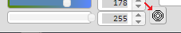
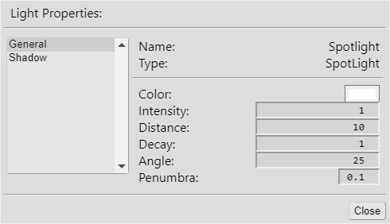

Crocotile 3D
Crocotile 3D
Overview
Getting Started
Commands
Configuration
Tilesets
UVs
Animated Tiles
Painting
Transforms
Objects
Cameras
Lights and Shadows
Bake Lighting
Layers
Effects
Active Selection Mode
Animation
Skinning & Rigging
Exporting
Importing
Miscellaneous
Getting Started
Commands
Configuration
Tilesets
UVs
Animated Tiles
Painting
Transforms
Objects
Cameras
Lights and Shadows
Bake Lighting
Layers
Effects
Active Selection Mode
Animation
Skinning & Rigging
Exporting
Importing
Miscellaneous
Crocotile 3D is a tile-based modeling editor. You can import tilesets and select tiles from the image to place into the 3d scene to construct environments, objects, characters or anything else you can imagine. Controls in the editor allow you to fine-tune and edit these tiles, allowing any shape or form to be made. This document outlines all the methods of interacting with the software and includes instructions on how to use it.
Click the üêä icons throughout this document to watch specific video clips on how to do stuff in Crocotile 3D.
üìù
Would you like to translate this document to another language? Your help would be appreciated!
To translate this document click on any text and replace it with your translation. Click Save at the top of the document to export the data. You can import the data you've previously saved by clicking Load.
 üêä
When you open Crocotile 3D, you're presented with the main window that displays an empty scene (where you'll be placing the tiles), and a smaller window that contains tabs for the Tileset, UVs, Painting, Transforms, and Scene panels. The Tileset tab is open by default and is where you can choose which tiles to draw into the scene. Clicking on the tileset will select a portion of the image according to the tilesize values near the bottom of the window and this selected piece will be used when drawing your tiles into the scene.
üêä
When you open Crocotile 3D, you're presented with the main window that displays an empty scene (where you'll be placing the tiles), and a smaller window that contains tabs for the Tileset, UVs, Painting, Transforms, and Scene panels. The Tileset tab is open by default and is where you can choose which tiles to draw into the scene. Clicking on the tileset will select a portion of the image according to the tilesize values near the bottom of the window and this selected piece will be used when drawing your tiles into the scene.
To draw into the scene, you must be in Draw mode. This mode is activated by default. You can toggle between Draw mode and Edit mode by pressing Tab or by clicking the Mode button located at the top of the main window.

When you are ready to draw to the scene just click the scene to place a tile or click and drag to place multiple tiles. Right clicking will erase them. You can control the position where the tiles are created as well as their direction. The tile gets placed against an invisible plane that always aligns with the 3d crosshair.
 The 3d crosshair is depicted by white lines that extend along the x, y, and z axis. By moving this crosshair, you can adjust where the tiles are drawn. You can press W, A, S, and D to move the crosshair up, left, down, and right. Holding Spacebar and pressing W will move the crosshair away from you while pressing S while Spacebar is held will move the crosshair towards you. Adjusting the Grid Rounding value found in the lower right of the Tileset window will define the distance the crosshair moves.
The 3d crosshair is depicted by white lines that extend along the x, y, and z axis. By moving this crosshair, you can adjust where the tiles are drawn. You can press W, A, S, and D to move the crosshair up, left, down, and right. Holding Spacebar and pressing W will move the crosshair away from you while pressing S while Spacebar is held will move the crosshair towards you. Adjusting the Grid Rounding value found in the lower right of the Tileset window will define the distance the crosshair moves.

Rotating the scene/camera to look at it from another angle will allow you to change which invisible plane the tiles get drawn against. So for example, if you are looking down at the scene then the tiles will get drawn looking upwards. Hold Spacebar and click and drag using the mouse buttons to rotate, zoom, and pan the camera.
Try drawing tiles from various angles and moving the 3d crosshair to get comfortable with placing tiles. These controls are unique so it may feel strange at first, but they are designed to be intuitive. It will allow you to place tiles quickly from any angle and position. You could try rotating the tile brush by pressing Q or E. You can even flip it or mirror it by pressing F or R.
When you've had enough practice, you'll want to begin editing the tiles to gain greater control over their shape. Switching to Edit mode will allow you to interact with the tiles in various ways. In Edit mode, you can click on tiles to select/deselect their faces or click on their corner points to select/deselect their vertices. With these highlighted, now moving the 3d cursor via the W, A, S, and D keys will move the selected vertices and faces as well. Holding Shift will allow you to move the crosshair without moving the selection. Use a lower Grid Rounding value for more precise positioning.
Try selecting and moving faces and vertices. You can also press Q or E to rotate the selection in Edit mode. Notice that the selection rotates around the center of the 3d crosshair. F will flip the selection relative to the crosshair position and R will mirror it similarly.
 There are other ways of moving the selected vertices and faces. One way is to interact with the 3d Gizmo that appears when a selection is made. The Gizmo allows you to translate, rotate, and scale your selection by clicking one or more of its axes and dragging them. You can turn off the 3d Gizmo by pressing X or by clicking the Gizmo toggle button at the top.
You can press Shift+X to toggle between the transform, rotate, and scale modes, or you can click the button to the left of the Gizmo toggle button.
There are other ways of moving the selected vertices and faces. One way is to interact with the 3d Gizmo that appears when a selection is made. The Gizmo allows you to translate, rotate, and scale your selection by clicking one or more of its axes and dragging them. You can turn off the 3d Gizmo by pressing X or by clicking the Gizmo toggle button at the top.
You can press Shift+X to toggle between the transform, rotate, and scale modes, or you can click the button to the left of the Gizmo toggle button.
Another way to move vertices is by clicking and dragging them directly with the mouse. You can hold Shift while you drag a vertex to snap it onto another vertex.
A couple other things that you can do to tiles that are worth mentioning is reversing the face, or flipping the face edge. Try reversing a face by selecting a tile and pressing Shift+R. If it disappears, this is because it is now facing away from the camera in the opposite direction. Tiles aren't visible from their backside. Each tile consists of two triangles, and the edge these triangles share can be flipped by pressing Shift+F. Try flipping some edges to see the effect it has. This is useful if you want more control over how a tile is shaped.
Be sure to look over the list of commands and read through this entire document to understand all the ways you can interact with tiles, edit them, paint over them, and more.
General
- Tab Toggle between draw/edit mode
- F1 Open configuration settings
- F2 Open activation/info window
- F3 Open keyboard configuration settings
- unassigned Open the Render Camera panel.
- unassigned Open the Render Spinning Gif panel.
- unassigned Open the Render Movie panel.
- F12 Take screenshot
- 9 Toggle double-sided mode for current tileset (backface culling)
- Ctrl+9 Toggle wireframe mode
- Alt+9 Toggle Camera Style
- Unassigned Toggle on/off the texture of currently selected tilesets. This allows vertex colors to be seen clearly. To assign a key, go to: Edit > Buttons > General > Toggle Render Texture.
- Unassigned Toggle on/off the vertex colors of currently selected tilesets. To assign a key, go to: Edit > Buttons > General > Toggle Render Vertex Colors.
- Unassigned Toggle on/off the rendering of bones. To assign a key, go to: Edit > Buttons > General > Show/Hide All Bones.
- 0 Hide/Show origin,crosshair lines
- Esc Close opened panels
- Alt+F4 Exit the program
- ` Focuses the 3d viewport.
- Shift+` Only show 3d viewport. This will hide/show the sidebars.
- Delete Removes any selected tiles. The tile's face must be selected.
- Unassigned Reload/Refresh all Tilesets. Changes made to any tilesets will be lost.
- Unassigned Open the next panel in the sidepanel.
- Unassigned Open the previous panel in the sidepanel.
- Unassigned Open the Tileset panel.
- Unassigned Open the UVs panel.
- Unassigned Open the Painting panel.
- Unassigned Open the Transform panel.
- Unassigned Open the Scene panel.
- Ctrl+S Save scene to current Crocotile 3D file
- Ctrl+Shift+S Save scene as a new Crocotile 3D file
- Ctrl+L Load a Crocotile 3D file
- Ctrl+E Export scene as a .obj, .gltf, .glb, .dae
- Ctrl+Shift+E Export objects separately as .obj, .gltf, .glb, .dae files.
- Ctrl+Z Undo
- Ctrl+Y Redo
Camera Controls
üêä
Holding Spacebar will toggle camera mode. In this mode, you can click and drag the scene using the mouse buttons to rotate, zoom, and pan the scene. This will allow you to change the direction of the plane that you draw your tiles on (see Draw mode for more info).
- Spacebar+Left Mouse & Drag Rotate camera angle
- Spacebar+Middle Mouse & Drag Zoom in/out
- Spacebar+Right Mouse & Drag Pan camera
- Spacebar+Alt+Right Mouse & Drag Zoom in/out
- Spacebar+Y Move forward
- Spacebar+H Move backward
- Spacebar+G Move left
- Spacebar+J Move right
- Spacebar+F Toggle Freelook camera mode on/off.
- W Move forward.
- A Move left.
- S Move backward.
- D Move right.
- Q Move up.
- E Move down.
- F Toggle Flat Movement mode.
- C Center camera to selection, or crosshair (if no selection)
- Spacebar White outer buttons Rotate camera towards cardinal direction
- Minus Zoom out scene
- Plus Zoom in scene
- Unassigned Cardinal Rotate Left. Rotate left towards the nearest cardinal direction.
- Unassigned Cardinal Rotate Right. Rotate right towards the nearest cardinal direction.
- Unassigned Cardinal Rotate Up. Rotate up towards the nearest cardinal direction.
- Unassigned Cardinal Rotate Down. Rotate down towards the nearest cardinal direction.
üêä
üêä
üêä
The following actions can be performed while in Freelook mode:
üêä
üêä
Crosshair Controls
üêä The 3d crosshair is used to position the invisible plane that you draw tiles onto. It is also used to move selected vertices and faces or to rotate, mirror, and flip them. The 3d crosshair is visualized as white lines that extend along the x, y, and z axis. You can adjust the grid size to change how far the 3d crosshair moves per step.
You can also Tilt the crosshair. This allows you to draw and edit tiles at angles other than the default x,y,z. üêä
- W,A,S,D Move selection and/or 3d crosshair.
- Shift+W,A,S,D Move the 3d crosshair without moving selection.
- Space+W,S Move crosshair/selection towards/away from camera.
- Click vertex Move crosshair to location of vertex.
- Alt+C Snap the crosshair to the nearest vertex, object or any other entity that the mouse is hovering over.
- Space+C Move the crosshair to the location the mouse is hovering along the invisible plane, and rounded to the grid rounding value relative to the previous position.
- [ Decrease grid rounding size
- ] Increase grid rounding size
- Alt+Shift+C Center crosshair to the average position in the selection (in Edit mode). Adds all the positions together and divides by the number of selected elements.
- Shift+C Center crosshair to the bounds of the selection (in Edit mode)
- Alt+O Snap the crosshair to the grid (rounds its position based on grid-rounding value).
- Shift+T Hover over edge of a tile and press these keys to set an Anchor point relative to the tile's edge. The anchor represents your tilted orientation. Press twice to hide/show it.
- T Toggle the Tilt mode for your 3d crosshair. It will match the orientation of the anchor point you have set.
üêä
üêä
üêä
Gizmo Controls
üêä The 3d Gizmo has three modes (move, rotate, and resize). You can toggle between them by pressing the corresponding button located at the top of the scene , or by pressing Shift + X. By clicking and dragging the Gizmo's lines representing the X,Y, and Z axes, you can move, rotate, or resize the selected faces and vertices in the scene. Adjusting the Grid Rounding value will effect how fine or coarse the changes are. You can also set the Rotation Interval value to rotate at specific intervals. The 3d Gizmo will become visible when you select some vertices or instances. You can click the Gizmo toggle button at the top of the scene or press X to toggle the 3d Gizmo on/off.
Pressing Shift+X will cycle through the translation, rotation, scale modes.
The 3d Gizmo will become visible when you select some vertices or instances. You can click the Gizmo toggle button at the top of the scene or press X to toggle the 3d Gizmo on/off.
Pressing Shift+X will cycle through the translation, rotation, scale modes.
Pressing Alt+X will position the Gizmo to the nearest vertex, object or any other entity that the mouse is hovering over, or to the 3d crosshair. You can toggle between vert,object,entity location and crosshair location by pressing it again.
The Gizmo Alignment button will toggle between World and Object modes. When Object mode is set, the Gizmo and crosshair will automatically orient itself to the selected Object. You also can press Ctrl + Shift + X to toggle between World and Object mode.
Draw Mode
When drawing tiles or prefabs into the scene, they will be drawn onto an invisible plane that aligns with one of the 3d crosshair's axis. Which axis it aligns with will depend on the current direction of the camera. Changing the direction of the invisible plane allows you to draw the tiles and prefabs in different directions. Along with positioning the crosshair this allows you to draw at any position or orientation in 3d space. üêä
- Left Mouse Draw tiles into the 3d space
- Right Mouse Erase tiles from the 3d space
- Q,E Rotate the tile's UV, or prefab's direction
- F,R Flip/Mirror tile's UV
- Alt+Right Mouse Click Copy UV coordinates of the clicked tile
- Alt+Left Mouse Click Apply UV coordinates to the clicked tile
- Ctrl+D Deselect verts/faces (press key once for verts, second press for faces)
- Spacebar+1 Locks the invisible plane to the X orientation (When placing tiles, or prefabs). Press again to unlock. Does not work with Sticky tool, Block tool, or Tilt mode.
- Spacebar+2 Locks the invisible plane to the Y orientation (When placing tiles, or prefabs). Press again to unlock. Does not work with Sticky tool, Block tool, or Tilt mode.
- Spacebar+3 Locks the invisible plane to the Z orientation (When placing tiles, or prefabs). Press again to unlock. Does not work with Sticky tool, Block tool, or Tilt mode.
üêä
üêä
üêä
üêä
- 1 Select the Tile tool.
- 2 Select the Sticky tool.
- Shift Hold down to set tilebrush scale back to normal while using the Sticky tool.
- 3 Select the Block tool.
- unassigned Select the Primitive tool.
- 4 Select the Vertex Color tool.
- Left click on a tile to apply the color to the nearest vertex. The current color selected in the Painting panel will be the color that gets applied to the tile.
- Right click on a tile to erase the color of the nearest vertex.
- If you hold Alt and Right click, you can eyedrop the existing color of the nearest vertex the mouse is hovering over.
- There are also some commands that can be accessed in Edit mode from the context menu. They are located within the "Vertices > Vertex Colors" sub-menus of the Context menu.
- Apply current color to selected vertices This action will apply the currently selected color to any selected vertices.
- Remove color from selected vertices This action will remove any colors from the selected vertices.
- Bake lighting This will open a panel with options for baking lighting to the selected vertices. Check the Bake Lighting section of this documentation for more information.
- Select vertices using current color This action will select any vertices that have the currently selected color applied to them.
- Deselect vertices using current color This action will deselect any vertices that have the currently selected color applied to them.
- You can bind a key to the Toggle Render Texture action in the Buttons panel, located within the General section. This action allows you to toggle on/off the texture of the currently selected tileset. This will allow you to see the vertex colors clearly without the texture mixing in.
- Alt+1 Select the Pencil tool.
The Tile tool is used as the default way of drawing to the scene. It allows you to draw tiles against the crosshair planes relative to the camera's orientation.
üêä
The Sticky tool allows you to draw tiles from the edge of existing tiles in the scene. By hovering over a tile's edge, a tile can then be drawn directly connected to that edge at an angle relative to the camera's orientation. This can be a useful way to place tiles without having to move the crosshair into place.
üêä
The Block tool allows you to place blocks into the scene. Each block consists of a group of tiles, and you can add or remove these blocks. You can place them against the crosshair planes, or you can simply hover over an existing tile and build a block out from it. Left click to add a block. Right click to subtract a block.
The Primitive brush tool allows you to draw primitive shapes into the scene. These shapes can be customized in the Transform panel under the Primitive section. There you can select between box, wedge, cylinder, cone, and sphere.

üêä
The Vertex Color tool allows you to add a tint of color to your tiles. Each vertex can be assigned a color, and the tile will interpolate the color values across the tile. In this way you can create gradients and blends of color that tint the textures of your tiles.
üêä
The Pencil tool allows you to paint directly to the tiles in the 3d view. This is useful if you want to lay out your details more precisely on an irregular shaped mesh. You can also hold Alt and click to eyedrop a color from a tile.
Edit Mode
Each tile consists of four vertices and two triangles/faces. These can be modified in various ways and in various combinations. You can toggle between Edit mode and Draw mode by pressing Tab. While in Edit mode you can right click the scene to open a menu with various actions that can be made on selected vertices or faces.- Left Mouse Click Select/deselect 3d quads, verts, edges, and objects.
- Ctrl+Left Mouse Click Select/deselect nearest vertex of the tile being clicked.
- Alt+Left Mouse Click Move crosshair to the clicked vertex without selecting it.
- Middle Mouse Click Toggle active-selection mode (if tiles are highlighted). See Active Selection section for more details.
- Right Mouse Click Open context menu to select from various commands
- Shift+Enter Active selection mode. Only vertices on the highlighted faces are editable.
- Enter Edit a selected instance if one is selected, or stop editing the instance if all verts and faces are deselected.
- Q,E Rotate selection 90 degrees around 3d crosshair
- Shift+Q, Shift+E Rotate selection 90 degrees clockwise / counter-clockwise around 3d crosshair
- Unassigned Rotate selection a number of degrees around 3d crosshair based on the rotation interval value.
- Unassigned Rotate selection clockwise / counter-clockwise a number of degrees around 3d crosshair based on the rotation interval value.
- F,R Flip/Mirror selection
- Left,Right,Up,Down Adust UVs of selected verts
üêä
üêä
üêä
üêä
üêä
üêä
üêä
üêä
üêä
- Left Mouse Drag Selection marquee of verts
- Alt+Left Mouse Drag Deselection marquee of verts
- Shift+Left Mouse Drag Selection marquee of quads
- Shift+Alt+Left Mouse Drag Deselection marquee of quads
- Ctrl+Shift+Left Mouse Drag Selection marquee of edges
- Ctrl+Shift+Alt+Left Mouse Drag Deselection marquee of edges
- Ctrl+Left Mouse Drag Selection marquee of objects
- Ctrl+Alt+Left Mouse Drag Deselection marquee of objects
- Unassigned Spot Select Faces. Select quads that the mouse cursor hovers over.
- Unassigned Spot Deselect Faces. Deselect quads that the mouse cursor hovers over.
- Shift+F Flip quad edge
- Shift+R Reverse face
- . Combine vertices together and place at the Crosshair position.
- Unassigned Straighten vertices relative to their own tiles. It uses the triangle's face normal opposite the selected vertex, or an average of both if both vertices are selected. This will result in a flattened tile. This can also be accessed in the context-menu; Vertices > Straighten relative to their own tiles.
- / Push the selected vertices and objects against existing tiles in the Scene. They are pushed along the cardinal direction of the 3d crosshair that the camera faces.
- Shift+P Push and align selected vertices and faces against the crosshair plane
- Ctrl+P Pull and align selected vertices and faces against the crosshair plane
- P Center the selected vertices and faces on the crosshair plane
- / Push the selected vertices and objects against existing tiles in the scene, along the cardinal direction the camera faces.
- Shift+/ Push the selected vertices and objects (as a group) against existing tiles in the scene, along the cardinal direction the camera faces. This shifts the entire group and retains their positions relative to each other.
- Alt+S Hold down keys and left click a tile to split it.
- Alt+D Subdivide a tile or a group of tiles that are selected.
- Alt+E + Click and drag Extrude tile faces or edges. You can also click and drag the Gizmo to extrude linearly along a specific direction. Read the Transform section for details about more Extrude options.
- Ctrl+C Copy quads
- Ctrl+V Paste quads
- Ctrl+D Deselect verts/faces (press key once for verts, second press for faces)
- Ctrl+A Select all verts (once for highlighted face/edge verts, again to select overlapping verts). If no faces, edges or verts selected, it will select all faces in the scene.
- Ctrl+Shift+D Deselect all object instances
- Ctrl+Shift+A Select all object instances
- Click drag Vertex Drag/move a vertex with mouse
- Shift+Click drag Vertex Snap dragged vertex to another vertex. You can also perform this operation with the Gizmo to snap an entire selection. You can also snap to the nearest vertex on an object being hovered over.
- B Toggle camera-based selection
- 8 Select vertices along the x,y,z axis. You can customize the key-bindings for each axis in the buttons settings.
- Alt+B Open the Bake Lighting panel that is used for baking the lighting/ambient occlusion to the selected vertex colors.
- L Point any selected Instances or Entities at the current Crosshair position.
- O Realign the selected vertices/faces/objects or any other entity to the nearest pixel (equal to a grid-rounding value of one).
- Ctrl+O Realign the selected vertices/faces/objects or any other entity to the grid using the current grid-rounding value.
- Unassigned Disable/enable the ability to select faces.
- Unassigned Disable/enable the ability to select vertices.
- Unassigned Disable/enable the ability to select edges.
- Unassigned Select Edge Loop. Select any open edges that connect with the currently selected edges.
- Unassigned Select faces connected to currently selected vertices.
- Unassigned Deselect faces connected to currently selected vertices.
- Unassigned Select faces facing camera axis. This will select faces that face along the nearest cardinal direction closest to the camera.
- Unassigned Deselect faces facing camera axis. This will deselect faces that face along the nearest cardinal direction closest to the camera.
- Unassigned Select within Face Normal range. This will select all faces connecting together, beginning with the currently selected faces, as long as their face normals are within range of each other (specified by the "Rotation angle" in the Tileset panel).
- Unassigned Deselect within Face Normal range. This will deselect all faces connecting together, beginning with the face you last hovered over, as long as their face normals are within range of each other (specified by the "Rotation angle" in the Tileset panel).
- Unassigned Select Faces in same UV group. This will select any faces that are in the same UV groups as the currently selected faces and if none are selected then the face currently hovered over.
- Unassigned Deselect Faces in same UV group. This will deselect any faces that are in the same UV groups as the currently selected faces and if none are selected then the face currently hovered over.
- Unassigned Select tile Faces that use the currently selected Tileset.
- Unassigned Deselect tile Faces that use the currently selected Tileset.
- Unassigned Select the UVs of a tile hovered over. The tile's face must first be selected so that the UVs are shown in the UVs panel.
- Unassigned Deselect the UVs of a tile hovered over. The tile's face must first be selected so that the UVs are shown in the UVs panel.
- Unassigned Divide a tile into two triangles. Each triangle is a single tile with one side collapsed.
- Unassigned Merge together triangular tiles so that two triangles become one tile. The UVs of the overlapping vertices must match.
- Unassigned Merge together triangular tiles so that two triangles become one tile. Merges even if UVs of overlapping vertices do not match.
- Unassigned Select any triangular tiles.
- Unassigned Select vertices connected to currently selected faces.
- Unassigned Deselect vertices connected to currently selected faces.
- Unassigned Hide or Show the selected tiles. This can also be accessed in the context-menu; Faces > Hide, Show.
- Unassigned Group together the selected tiles into their own Object. Object will also be listed in the Scene panel. Check the Objects section of this documentation for more information.
- Unassigned Adds the selected Object or Instance to the scene at the position of the 3d crosshair. The Object/Instance must be selected in the Scene panel list.
- Unassigned Deconstruct the selected Instance in the 3d scene back into individual tiles.
- Unassigned Duplicate the selected Instances.
- Unassigned Take the Origin point of a selected Object or an Object being edited and move it to the current position of the 3d crosshair.
üêä
üêä
üêä
üêä
üêä
üêä
üêä
üêä
üêä
üêä
üêä
üêä
üêä
üêä
üêä
üêä
üêä
üêä
üêä
üêä
üêä
üêä
üêä
You can select all triangular tiles by opening the context-menu, and going to Faces > Select triangular tiles. This will select any tiles that have one or more of their polygons hidden. This may be useful in cases where you export the scene with polygon type set to Quads and Merge Vertices enabled, as triangular tiles could mess up the export in that case.
You can select a series of edges that connect end to end by using the Select Edge Loop action from the context-menu. It is located within the sub-menu of Edges when you right-click the 3d scene. You must have at least one edge already selected for it to select connected edges.
You can merge tiles together by using the Merge Edges actions from the context-menu. This will remove the edges between two tiles and combine the tiles into one single tile. This action is located within the sub-menu of Edges when you right-click the 3d scene. There is a safe merge and a forced merged. The safe merge requires that the UV coordinates match where two tiles touch. The forced merge will merge them regardless.
If you place down tiles and their UVs aren't oriented the same way, there is a way to orient all of them so that they match. Select their faces and then open the context-menu. Go to UVs, and select Orient UVs.
Tilesets
With the Tileset tab open, you can select a part of the image. This selection can then be drawn into the scene. üêä Multiple tilesets can be used. To add a new tileset click the tileset button and choose Add tileset. You can click the next and previous buttons to toggle between tilesets.
üêä
You can click the next and previous buttons to toggle between tilesets.
üêä

- Left Mouse Click/Drag Select portion of the tileset.
- Right Mouse Click/DragSwap the currently selected tile with another tile.
- Unassigned Toggle opacity of tileset/tiles
- Ctrl+Minus Zoom out tileset
- Ctrl+Plus Zoom in tileset
- Ctrl+[ Previous tileset
- Ctrl+] Next tileset
- Space+Mouse Click & Drag Pan the tileset viewport
- Unnassigned Scroll the tileset canvas left/right/up/down.
- Left,Right,Up,Down Move the tile selection a distance equal to the UV Precision value. Hold Ctrl to move a distance of 1 pixel
üêä
üêä
üêä
üêä
UVs
The following keys apply while the UVs panel is in focus. Read the UVs section to learn more about how to edit UV coordinates.- Left Mouse Click/Drag Select multiple UV coordinates if not hovering over any. Hold Alt to deselect multiple UV coordinates.
- Left Mouse Click/Drag Drag and move the selected UV coordinates if hovering any. Coordinates will move at a stepping distance equal to the UV Precision values. The crosshair can also be moved this way.
- Shift+Click drag UV Snap dragged coordinate to another coordinate or move at one pixel distances.
- Shift+Click drag Rotate selection at increments, or snap angle to coordinate being hovered over.
- Ctrl Limit selection to the nearest UV coordinate of a tile the mouse is hovering.
- Left,Right,Up,Down Move UVs a distance equal to the UV Precision value. Hold Ctrl to move UVs a distance of 1 pixel
- Ctrl+Shift+Click drag Marquee UV coordinates without dragging/clicking UV tiles in the UVs panel
- Alt or Ctrl+Alt+Click drag Subtract marquee UV coordinates without dragging/clicking UV tiles in the UVs panel
- R Mirror
- F Flip
- Q Rotate left
- E Rotate right
- B Toggle between singular/multiple UV selections
- N Flatten the selected UVs.
- O Round the selected UV coordinates to the nearest pixel
- . Set the selected UV coordinates to the UV crosshair position
- Ctrl+A Select all
- Ctrl+D Deselect all
- Double Click Deselect all (If not hovering UVs)
- C Center the crosshair to the selected UVs
- Right Mouse Click Open the context-menu for UVs
- Space+Mouse Click & Drag Pan the viewport
- Ctrl+Minus Zoom out tileset
- Ctrl+Plus Zoom in tileset
- Ctrl+Z Undo
- Ctrl+Y Redo
- Ctrl+[ Previous tileset
- Ctrl+] Next tileset
üêä
Paint
The following keys apply while the Paint window is in focus. Read the Painting section to learn more about how to use the tools.- Left Mouse Click/Drag Use tool
- B Pencil tool
- E Eraser tool
- G Paint bucket tool
- I Eyedropper tool
- M Marquee tool
- L Lasso tool
- W Magicwand tool
- H Hand tool
- V Arrow tool
- X Swap foreground color with background color
- [ Decrease brush size
- ] Increase brush size
- Ctrl+Minus Zoom out tileset
- Ctrl+Plus Zoom in tileset
- Ctrl+Z Undo
- Ctrl+Y Redo
- Ctrl+X Cut Selection
- Ctrl+C Copy Selection
- Ctrl+V Paste Selection
- R Mirror Selection
- F Flip Selection
- Unassigned Rotate the selection counter-clockwise
- Unassigned Rotate the selection clockwise
- Alt+Pencil Eyedrop a color
- Alt+Paint bucket Eyedrop a color
- Space+Mouse Click & Drag Pan the tileset viewport
üêä
üêä
üêä
üêä
üêä
üêä
üêä
üêä
üêä
üêä
üêä
üêä
üêä
üêä
Scene
Opening the Scene tab will display a list of layers and objects (if any exist in the scene). You can add layers and import prefabricated objects, or create objects from groups of tiles in the scene. To know more about this, check the Objects section.- Left Mouse Click/Drag Move items in the list to reorder them.
- Right Mouse Click Open menus by right clicking the items in the list
- Double Left Click Double clicking the name of a listed item will let you rename it. Double clicking off to the side of the name will open the object's properties.
Animation
- Delete Remove any selected keyframes from the animation timeline.
- Ctrl+C Copy any selected keyframes in the timeline relative to the playhead position.
- Ctrl+V Paste keyframes to the timeline relative the playhead position.
- Ctrl+A Select all the keyframes, segments, weights in the timeline.
- Ctrl+D Deselect all the keyframes, segments, weights in the timeline.
- Alt+Left Mouse Click/Drag Duplicate keyframes by clicking and dragging selected keyframes while holding Alt.
- Ctrl+Mousewheel Move the playhead position to the next/previous keyframe in the animation panel.
- Previous Keyframe: Unassigned Move playhead to previous keyframe in timeline.
- Next Keyframe: Unassigned Move playhead to next keyframe in timeline.
Settings
The settings and configuration of Crocotile 3d can be accessed from the Edit menu at the top of the main window, or by pressing F1.- Save & Load
There are Save and Load buttons that will allow you to save and load your settings. - Reset Settings
This will reset all the settings back to their default values.
- Resolution
The resolution of the 3d scene can be adjusted by specifying width and height values that can be either in pixels or a percentage of the window size. Close the settings to apply the changes. - Window Size
Setting these values will adjust the size of the main window. Close the settings to apply the changes. - FPS
The value you set here will determine how many frames get rendered per second. A higher FPS will make the scene appear smoother when moving around the scene. - Color Theme
Select between a Light or Dark color theme for the interface. - Backup states
This value defines how many backup files to save. These are saved to the Crocotile folder and saved every 5 minutes if changes have been made. - Undo states
This value defines how many undo and redo states to allow. A low value is recommended. - File Dialog Paths
Determines whether each File Dialog type will remember its own directory (Unique) or if it will just store one directory for them all (Shared). - Mouse Auto-Focuses Panels
When hovering mouse over panels, it will auto focus them so that corresponding keybindings work. - Wireframe
Toggle on/off the Wireframe. With this on, tiles will display their wireframe in the 3d scene. - Wireframe Color
This will set the wireframe color - Wireframe Highlight Color
This will set the wireframe's highlight color - Crosshair Color
This will set the 3d crosshair color - Screenshot folder
This specifies where the screenshots get saved. Press F12 to take a screenshot. - ViewCube
You can load a different viewcube from a .gltf of .glb file. The textures should be embedded in the file. - ViewCube Model Scale
The scale of the model. You can adjust the default scale if your model is too large or too small. Default value is 1. Half the size would be 0.5 - ViewCube Viewport Ratio
The percentage of the screen that the viewcube viewport covers. The default value is 0.25 - Show Ruler
If enabled, visual guides extend from the 3d tilebrush to help measure distances. - Lock Crosshair to the Grid
Keep the crosshair position rounded to the nearest grid point based on the grid-rounding value. - Snap Crosshair to Instance Origin
Snaps the crosshair to the instance origin instead of its vertices. - Increment Grid-Rounding Custom
The amount to increment/decrement the grid-rounding value when pressing Shift+[ or Shift+].
üêä
- Base Pixel Unit
The base pixel unit defines how many pixels per meter there are. One 3d unit equates to 1 meter. Since some older projects may not have a base pixel unit defined, there is an option to specify the current unit when changing the value. When resizing the scene, it will compare the current unit with the new unit to determine the amount to scale the scene. The ratio to multiply the scene by is calculated as: (1 / new) / (1 / current). - Skybox Shape
Select either a Box, Cylinder, or Sphere for the shape of the skybox. Skybox .png files for each can be found in the misc folder in your Crocotile folder. - Skybox
The default skybox image used for new projects. - Tilesets
The default tileset images to use for new projects. You can pick multiple images and they will load when a new project is created. - Background Color
This will set the background color of the scene - Background Transparency
This will make the background become more or less opaque. A value of 1 is fully opaque, while a value of 0 is fully transparent. When taking screenshots, it will use this value to determine the transparency of the background in the images. - Save/Load UV Tilesize
If this is enabled, projects will store the UV Tilesize and set it when loaded. - Save/Load Grid rounding
If this is enabled, projects will store the Grid rounding value and set it when loaded.
- Far frustum plane
This value determines how much of the scene is rendered. Lower value will render a shallower space, while a higher value will render deeper into the scene. - Field of view
This value determines how much of the scene the camera can see (how wide its viewing plane is). - Camera up vector
The axis that the camera's up vector will align to. - Freelook Sensitivity
The rotation speed of the camera while in Freelook mode. - Freelook Movement Speed
The movement speed of the camera while in Freelook mode. - Freelook Flat Movement
Keep camera level along the xz plane while moving. Also moves camera vertically when moving up or down. - Freelook Inverted
Inverts the direction of rotation when rotating up or down.
- Overlap Tilebrush
If toggled on, the tilebrush will overlap itself when drawing with a group of tiles. - Align Brush to Crosshair
If toggled on, the brush will position itself next to the crosshair so that its edge aligns with it. - Orient Prefab/Primitive Brush to Camera and Tilt
When this is enabled, the Prefab Brush & Primitive Brush will align itself relative to the camera direction as well as the tilt. - Sticky Edge Proportionate
When using the Sticky tool, the tilebrush will keep the proportions of the tile selection if this option is enabled.
üêä
üêä
- Camera-based Selection
If enabled, only vertices and faces that are visible from the camera's perspective will be selected. If disabled, vertices and faces behind each other will also be selected. You can also press B to toggle this setting on/off. - Deselect when single-clicking
Deselect everything first when you click a single element. You can hold Shift to prevent deselecting if you want to select multiple elements. - Deselect when clicked nothing
Deselect everything if you click on nothing in the scene. - Gizmo
If enabled, this can be used to help move,rotate, and scale vertices and faces in the scene. Arrows will display in the scene when a selection is made and these can be clicked and dragged. You can also press X to toggle this setting on/off. Check the Gizmo section of this document for more details. - Group WASD Undos
This will reduce the number of undo states when moving a selection of vertices, objects, with the WASD keys. If this is disabled, it will store an undo state for each step in the movement. - Reverse faces with Mirror/Flip
When mirroring or flipping selected faces, it will automatically reverse the direction of the faces. - Prioritize Gizmo
Sometimes a vertex may be under the mouse when clicking the Gizmo. If enabled, the Gizmo will take priority when clicking. If disabled, vertices will take priority. - Object mode constraint
If toggled on, this will prevent editing tiles outside of a prefab object while you are editing an instance. - Vertex Size
Adjust the size of the vertices. - Disable Face Selection
Disables the ability to select faces. - Disable Edge Selection
Disables the ability to select edges. - Disable Vertex Selection
Disables the ability to select vertices. - Overlapped Vertex Selection
When selecting/deselecting multiple vertices, it will select vertices belonging to a face that is facing away from camera as long as they share a position with a vertex that would normally be selected. - Selected Face Color
Sets the color of selected faces. - Selected Face Transparency
Sets the opacity amount of selected faces. A value between 0 and 1. 0 is fully transparent, and 1 is fully opaque. - Active Edit Face Color
Sets the color of selected faces in Active Edit mode. - Active Edit Face Transparency
Sets the opacity amount of selected faces in Active Edit mode. A value between 0 and 1. 0 is fully transparent, and 1 is fully opaque.
üêä
üêä
üêä
üêä
- Max Tileset Dimensions
The maximum dimensions for any tilesets. The default is 4096x4096 pxels. Setting this higher may cause the program to crash, or cause broken tilesets if your hardware can't support it. - Tileset Margins
The amount of blank space surrounding tilesets in the Tileset, UVs, and Painting panels. - Auto-refresh Tilesets
If enabled, tilesets will be refreshed every couple of minutes if their corresponding image file has been modified outside of the program, or refreshed immediately when returning to the program. - Drag multiple UVs
If toggled on, this will allow you to drag multiple UVs that are overlapping or sharing a coordinate in the UVs panel. - Hide UVs of non-active Tilesets
You can choose to hide UVs belonging to other tilesets and display only the UVs belonging to the currently selected Tileset. Or you can choose to display any UVs regardless of with Tileset is active. - Deselect all UVs with single click
Deselect all UVs with a single-click as opposed to a double-click when clicking outside of any UVs. - Keep UV pixel scale when reassigned tileset
When reassigning tiles to the currently selected tileset, this will prevent the UVs from becoming stretched if the tileset dimensions are different. - Checkered Size
This controls the size of the squares when drawing a checkered pattern to a tileset. - Eyedrop Alpha Color
If this is enabled, the paint eyedropper tool will sample the alpha of the color as well. If it is disabled, it will keep the current alpha value. - Subtract Padding from Tilebrush
If using UV Padding, this will ensure that the Tilebrush is scaled accurately when selecting tiles from the Tileset. - Multiply Padding by Tile selection
If using UV Padding, this will keep the Tilebrush size correct when selecting multiple rows/columns in the Tileset. - Show entire Tileset in Painting panel
If this is enabled the entire tileset will be visible when the Painting panel is open. Otherwise, only the section of the tileset selected from the Tileset panel will be visible.
üêä
- Add To Scene based on Camera and Tilt
When an Object or Instance is added to the scene via the Scene panel lists, this option will decide whether to orient it relative to the camera and tilt.
- Auto Keyframe only when paused
Controls whether auto-keyframes are added in both stopped mode and paused mode or just in paused mode. - Deselect all Keyframes with single click
If enabled, keyframes will be deselected when you single-click the timeline otherwise they will be deselected when double-clicking. - Deselect all Keyframes before multi-selecting
If enabled, keyframes will be deselected prior to selecting multiple keyframes when clicking and dragging the mouse.
üêä

Camera
- Perspective
This mode displays the scene with perspective that has a vanishing point. - Orthographic
This mode displays the scene without perspective, and thus without a vanishing point. This can be useful for an isometric style.
üêä
üêä
Skybox
Included with the program is a skybox.png file. This image serves as a template for your skyboxes. Images can be larger or smaller as long as the layout remains the same. From the Edit menu in the main window, there is a Skybox menu item with options to pick a skybox image, to show/hide the skybox, or to export the skybox image.Render
- Camera
Render out images from the cameras that have been placed into the scene. Check the Cameras section in this documentation for more information on how to add cameras and render! - Spin Gif
Create a gif animation where the camera rotates around in the scene. Specify the frames, frame interval, and rotation amount. Click Export, choose a filename and then it will begin creating the gif animation. Consider changing the window size to be smaller, as gif animations can create large filesizes the more frames they have and the larger the image dimensions are. - Movie
Renders animated theatre Acts. Check the Animation section for more information.
üêä
üêä
About
This will show a box with information about the version of Crocotile 3D. If you are using the non-Steam version, then it will also provide input fields to type in your email and activation code if you have registered for one. Registering allows you to gain the ability to save a scene with more than 100 tiles and also allows exporting your work. It also helps support the development of this product.Each tile in your scene displays an area of pixels from one of your tilesets. Simply click on the tileset to select a tile and apply it to your tilebrush. You can also click and drag to select a larger portion of the tileset. The size of your selection is determined by the UV Tilesize. You can also adjust the 3D Tilescale to change the size of the 3d tilebrush in the scene. Each tile uses UV coordinates to define what portion of the tileset to display on the tile's face. You can edit these UV coordinates in the UVs tab (read the UVs section on how to edit them)
- UV Tilesize
These values define the width and height of the tiles that you can select on your image. - UV Precision
When adjusting the UVs of a tile in a scene, these values define how many pixels to move by. (Update) These have been moved to the UVs panel. - UV Padding
When you select tiles from the tileset the corresponding UVs that get generated will be padded inwards by the amount set in the input boxes (left, right, top, bottom). This may be useful to prevent pixels bleeding across the edges of tiles. There are also a couple options in the Settings that apply to UV Padding. Check the Settings section for those details. - 3D Tilescale
This value will set the default size of the 3d tile in the scene. Setting it to 2 will make the tile twice as large for example.
üêä
üêä
üêä
Menu
The button with an image icon will open a menu with the following choices.
- Add Tileset
This will open a window to select an image to use as a Tileset/texture. You can cycle through all your Tilesets you've added by clicking the next and prev buttons. - Add Blank Tileset
This will open a window where you can specify the dimensions and background color of a new tileset to add. - Add selected tiles to new Tileset
This will create a new tileset based off of the currently selected tiles from the current tileset. - Tileset Material Settings
This will open a window where you can choose the type of material the tileset uses, as well as set any material properties. If you want to use lights and shadows in your scene, you'll have to use a material that interacts with lights, such as the Phong material. You can also change the name of the tilesets in this panel. - Replace Tileset
This opens a window to select an image that will replace the current Tileset that is selected. Tiles in the scene that use the old image will get this new image applied to them. - Remove Tileset
Removes the currently selected Tileset and also all the tiles in the scene that use the Tileset. This choice as well as the others can be undone/redone by clicking the undo/redo buttons or pressing Ctrl+Z or Ctrl+Y. - Remove Unused Tilesets
Removes any Tilesets that haven't been used in the scene or are being used by any objects, including objects that haven't been added to the scene. - Combine Tileset
If you have duplicate tilesets, you can use this to combine them into one. Tiles and objects that use a tileset being combined, will then use the one after being combined. There is an option to merge the tileset down (the top tileset selected will be over the bottom tileset selected). There is also a choice of whether to discard the bottom tileset or the top tileset, which may be important if you aren't merging them. - Combine Matching Tilesets
This will combine all the tilesets that match the currently selected tileset so that only one remains. This is useful for removing multiple duplicates of the same tileset.
üêä
üêä
üêä
üêä
üêä
Apply Tileset to the selected Faces
This will switch the tileset of any selected tiles to the currently selected tileset. It essentially reassigns the tile texture to another texture (the currently selected tileset).The Keep UV pixel scale when reassigned tileset setting ensures that the UV coordinates don't become stretched if the tileset dimensions don't match. You can toggle this option on/off by going to Edit > Settings > Tilesets > Keep UV pixel scale when reassigned tileset.
Re-size Tileset
üêä Opens a window with various options to customize how to re-size the currently selected Tileset. You can control from which side the Tileset gets re-sized from by clicking one of the nine buttons. Arrows on these butttons will show the direction the re-size will occur.
- Canvas, Image You also have a choice between re-sizing the Canvas or the Image. If Canvas is chosen, the image will remain the same scale while the canvas is re-sized, whereas if Image is chosen, the image will stretch.
- Tiles, Pixels, Percentage The unit of measurement.
- Proportionate If enabled will keep the same proportions.
- Checkered Whether to create a checkered pattern across any new canvas space.
- Color The color of the canvas when the tileset is resized larger.
Export Tileset
If you make any changes to your Tileset, such as resizing it or painting on it, you can export the image in png format by selecting this menu item.
Tileset List
There is also a button between the buttons with arrow icons. Clicking it will toggle on/off a list of all your tilesets. This is a way to easily select another tileset. You can also press Ctrl+[ and Ctrl+] to cycle through them, or click the arrow buttons. You can reorder the tilesets by clicking and dragging them to a new position in the list.Double-clicking a tileset will open its material properties panel. In this panel, you can change the default name of the tileset.
Tile Swapping
üêä You can swap tiles by selecting tiles in the tileset window and then right-click and dragging them to the desired location. UVs of tiles in the 3d scene will get updated to the new UV locations if their UVs were inside the tile area you are repositioning.Tileset Context Menu
This menu allows you to perform various operations related to tiles.
- Add selected tiles to new Tileset
- Creates a new tileset using the selected area of the tileset.
- Tile Palette
- Add tiles to selected Tile Palette
- Adds the selected tiles to the currently selected Tile Palette. You can also press the = key.
- Remove Tiles
- Removes the selected tiles from the currently selected Tile Palette. You can also press the - key.
- Edit Weights
- Edit the weights of the selected tiles in the currently selected Tile Palette.
- Select Tiles
- Select Tiles using Tilebrush's UVs
- Selects any faces in the scene that have the same UVs as the Tilebrush's and is using the same Tileset.
- Select Tiles within Tile selection
- Selects any faces in the scene that have all of their UVs located within the current selected area on the tileset and is using the same Tileset.
- Select Tiles touching Tile selection
- Selects any faces in the scene that have any of their UVs located within the current selected area on the tileset and is using the same Tileset.
- Select Tiles using current Tileset
- Selects any faces in the scene that is using the currently selected Tileset.
- Deselect Tiles
- Deselect Tiles using Tilebrush's UVs
- Deselects any faces in the scene that have the same UVs as the Tilebrush's and is using the same Tileset.
- Deselect Tiles within Tile selection
- Deselects any faces in the scene that have all of their UVs located within the current selected area on the tileset and is using the same Tileset.
- Deselect Tiles touching Tile selection
- Deselects any faces in the scene that have any of their UVs located within the current selected area on the tileset and is using the same Tileset.
- Deselect Tiles using current Tileset
- Deselects any faces in the scene that is using the currently selected Tileset.
- Apply Tilebrush UVs to Faces
- Applies the UVs of the Tilebrush to any selected faces in the scene.
- Apply Tileset to the selected Faces
- Applies the tileset to the currently selected Faces in the scene. This is useful if you want to swap the tileset that specific tiles are using.
Tile Palette
üêä Tile palettes are used to randomize the tiles you draw to the 3d scene. When you draw tiles to the scene, it will randomly choose from the tiles in the selected Tile Palette.You can set the weight of tiles in a palette. A tile with a higher weight will be selected more often than other tiles from the tile palette. You can also combine tiles from different tilesets into the same palette.
You can also randomize the Flip, Mirror, and Rotation of the tiles by toggling on the corresponding buttons next to the Tile Palette dropdown button.
Tile Palette Mode
The button to the left of the Tile Palette dropdown menu, controls the Mode of the Tile Palette. It can be either Random or Sequence. Random is the default and will choose randomly a tile from the palette. If Sequence is chosen, it will choose the tiles by order from left to right and repeat this sequence when placing tiles.Tile Palette Menu
- Add Palette
- Creates a new Tile Palette.
- Clear Palette
- Removes all tiles from the currently selected Tile Palette.
- Remove Palette
- Removes the currently selected Tile Palette.
- Reset Palette Weights
- Resets the weights to all the tiles of the currently selected Tile Palette.
- Hide/Show Palette
- Hides or shows the Tile Palettes.
Tile Palette Context-Menu
- Add Tiles
- Adds the selected tiles to the currently selected Tile Palette. You can also press the = key.
- Remove Tiles
- Removes the selected tiles from the currently selected Tile Palette. You can also press the - key.
- Edit Weights
- Edit the weights of the selected tiles in the currently selected Tile Palette.
Repeating a Texture across a Tile
üêä Click the Wrap button in the Tileset tab to select a wrap mode for the current Tileset (Clamp to Edge, Repeat, Mirrored Repeat).
Click the Wrap button in the Tileset tab to select a wrap mode for the current Tileset (Clamp to Edge, Repeat, Mirrored Repeat).
 With one of the repeat modes selected, a texture can then be repeated across a tile by moving the UV coordinates beyond the edges of the tileset. The UV coordinates will essentially wrap around, and the further you move them beyond the edge the more times it will repeat. By placing a tile into its own tileset and using that texture on a tile, you can adjust the vertices and their UV coordinates to get the desired result. Watch the video for a demonstration! This technique is useful for broad areas where you want to repeat a tile but want to keep the polygon count low. This helps optimize the geometry.
With one of the repeat modes selected, a texture can then be repeated across a tile by moving the UV coordinates beyond the edges of the tileset. The UV coordinates will essentially wrap around, and the further you move them beyond the edge the more times it will repeat. By placing a tile into its own tileset and using that texture on a tile, you can adjust the vertices and their UV coordinates to get the desired result. Watch the video for a demonstration! This technique is useful for broad areas where you want to repeat a tile but want to keep the polygon count low. This helps optimize the geometry.
Blurry Textures/Tiles
If your tiles appear blurry, this is due to the tileset not having a power of two dimension. Examples of safe image dimensions are; 2, 4, 8, 16, 32, 64, 128, 256, 512, 1024 pixels. Tilesets are now capable of being repeated across a tile, and this requires them to have width and height values that are a power of two.Decals
 üêä
Click the Decal button in the Tileset tab to enable/disable the mode for the current tileset.
üêä
Click the Decal button in the Tileset tab to enable/disable the mode for the current tileset.
 Tilesets that have their decal mode enabled will have their tiles appear on-top of tiles from other tilesets that don't have their decal mode enabled. Watch the video for a demonstration! Use decals in combination with repeating textures to add variety without adding many polygons.
Tilesets that have their decal mode enabled will have their tiles appear on-top of tiles from other tilesets that don't have their decal mode enabled. Watch the video for a demonstration! Use decals in combination with repeating textures to add variety without adding many polygons.
Transparency
Click the Transparent button in the Tileset tab to enable/disable the mode for the current tileset. If you plan to use tiles that are semi-transparent (uses the alpha channel of the texture image), you will need to place those tiles onto their own tileset that has Transparent mode enabled. This is necessary so that the renderer can draw the scene correctly and avoid occluding tiles behind the transclucent areas.Refresh
The refresh button next to the Zoom menu will force the Tilesets to refresh. They won't refresh if there has not been any changes to their files outside of the program. Be careful if you are Painting over your Tilesets if you haven't refreshed them prior to that process as refreshing them may overwrite your work. You can enable auto-refresh in the settings to keep the Tilesets up to date if you are editing them outside of the program. Just take note that any changes you make to them inside Crocotile will not be updated outside of Crocotile.
They won't refresh if there has not been any changes to their files outside of the program. Be careful if you are Painting over your Tilesets if you haven't refreshed them prior to that process as refreshing them may overwrite your work. You can enable auto-refresh in the settings to keep the Tilesets up to date if you are editing them outside of the program. Just take note that any changes you make to them inside Crocotile will not be updated outside of Crocotile.
As you may know, each tile in your scene displays a section of a tileset. Where these sections reside on a tileset are defined by the UV coordinates that the tiles use. Each vertex of a tile has a corresponding UV coordinate and these can be re-positioned to change what gets displayed. To change these, you must first select the faces in the scene. Selecting faces in the scene will display the corresponding UVs on the tileset panel within the UVs tab. To get a good idea on how to edit UVs, watch this video demonstration by clicking this crocotile link: üêä
- UV Precision
When adjusting the UVs of a tile in a scene, these values define how many pixels to move them by. - Rotation
This value specifies how many degrees to rotate the selection when holding Shift while rotating. - Start
When placing Animated Tiles into the 3d scene, the tile's animation will begin at the time based on this value. You can specify a frame to begin on, or the exact time in seconds. - Scale
The UV coordinates can be scaled relative to where the crosshair is located. For example; If you scale it by 2, each selected coordinate would be set twice as far away from the crosshair as they were before. If you applied a scale of 0.5, the coordinates would be placed half the distance towards the crosshair.
üêä
üêä
üêä
UV Context Menu
This menu allows you to perform various operations on UV coordinates. To open the menu, go to the UV tab and right-click the tileset. See below for more information regarding the various menu choices.- R Mirror
- F Flip
- Q Rotate left
- E Rotate right
- Ctrl+A Select all
- Ctrl+D Deselect all
- Crosshair
- C Move to mouse position
- Shift+C Center of selection
- Top Center of selection
- Bottom of selection
- Left of selection
- Right of selection
- Align Selection
- Center on crosshair
- Align top to crosshair
- Align bottom to crosshair
- Align left to crosshair
- Align right to crosshair
- Transform
- O Round to nearest pixel
- . Set to crosshair
- N Flatten
- U Unwrap
- Pack
- Set to tile
- Set to tileset
- Paint
- Add Padding
- Trace selected
- Fill solid
- Fill checkered
- Export UV map image
- 3d
- Deselect tiles (UVs selected)
- Deselect tiles (UVs unselected)
- Animation
- Ctrl+C Copy Frames
- Ctrl+V Paste Frames
Round the selected coordinates to the nearest pixel position.
Set the selected coordinates to the UV crosshair position.
üêä
Takes the shape of the selected tile in the 3d scene and flattens it onto the UV map.
üêä
Automatically flattens the selected UVs and connects them together edge to edge. Note: Any edges that are currently selected in the 3d scene will be treated as a UV seam and won't be connected.
Organizes the UVs within the tileset bounds without overlapping any. Connected UVs will stay grouped together. If UVs can't fit within the bounds they will be set outside the bounds.
If all the UVs of a tile are selected, it will set them to encompass the tile that was right-clicked when opening the context-menu.
If all the UVs of a tile are selected, it will set them to the edges of the tileset so that it encompasses the entire texture.

üêä
Draws around the selected UVs, extending it outwards by a specific amount of pixels.
üêä
Draws the selected UVs to the tileset image using the current paint color. Note: you have to select the coordinates in the UV panel that you want to trace.
üêä
Draws and fills the inner spaces of the selected UVs to the tileset using the current paint color. Note: you have to have all 4 coordinates of a tile selected in the UV panel for it to get painted.
üêä
Uses a checkered pattern to draw and fill the inner spaces of the selected UVs. It uses the primary and secondary colors of the paint tab, and the Checkered value in the settings to determine the size of the checker squares. Note: you have to have all 4 coordinates of a tile selected in the UV panel for it to get painted.
This will export a png image with the UVs drawn onto it. The primary paint color will be used for the UV lines, and the secondary color will be used for the background. There is also a Scale value that can be used to multiply the size of the image (to increase the pixel resolution of the lines if that is necessary).
Deselects the tiles in the scene that have their UVs selected in the UV panel.
Deselects the tiles in the scene that have their UVs unselected in the UV panel.
Copy the selected frames. All four UVs of a frame must be selected for it to be copied. Once copied, you can then paste them.
Paste the copied frames to the currently selected animation. This is useful for duplicating many frames without having to rebuild them all.
Selecting UVs
UV coordinates will be displayed in the UV panel whenever tiles in the 3d scene are highlighted. The UV coordinates will appear as small boxes. To select / deselect UV coordinates, simply click on them or click and drag a box around multiple UVs to select more than one. You can hold Alt while you drag to deselect multiple UVs.You can also click within the dotted lines that denote the tile, to select / deselect all the UVs of the tile. If you hold Ctrl while inside a tile's UVs, the coordinate closest to the mouse will be selected / deselected. üêä
Double-clicking within a tile's UVs will select/deselect the entire group of connected UVs. This is useful if you have a group of UVs that are neighboring each other and you want to select/deselect all of them.
Double-clicking while your mouse is not hovering any UVs will deselect everything. Alternatively, you can set this to use a Single-click by going to Edit > Settings > Tilesets > Deselect all UVs with single-click.
üêä The Drag multiple UVs option in the Settings will allow you to select multiple UVs that are overlapping instead of just one. You can press B to toggle it on/off. There is also a button in the UVs panel to toggle this on/off.

Snapping Together
üêä When you click and drag UVs, you can then hold Shift and hover over other UVs to snap them together. This allows you to snap a single UV coordinate to another coordinate, or snap a tile's UV edge to another edge. Which way it snaps depends on whether you drag a specific UV coordinate or whether you drag from within the tile's UV area. The closest edge to where you've clicked will be the edge that gets snapped when hovering over other tiles.Rotating
üêä To rotate the selected UVs, hold Shift to activate rotation mode (the UV boxes will switch to a circle shape), and then click and drag the UVs.If you hold Shift while rotating, it will rotate in increments. You can specify how many degrees in the Rotation input box.
Hovering over other UVs while hold Shift will snap the angle to that UV coordinate.
Scaling
To scale the selected UVs via the mouse, hold Shift+Alt and then click and drag one of the resize handles that appears or within a UV tile or one of the UV coordinates. The UV coordinates will be scaled relative to the crosshair position.While scaling, if you continue to hold Shift the increments will be rounded to the pixel, whereas if you release the Shift key, it will be rounded to the UV Precision value.
Crosshair
There is a small crosshair that becomes visible when you select UV coordinates. It automatically centers itself on the selection unless you begin to manually move it. Pressing C will recenter it again. You can also completely lock/unlock the crosshair by clicking the Lock/Unlock Crosshair button at the top of the UVs panel. Locking the crosshair will prevent it from being moved.To move the crosshair, simply click and drag it like you would a UV coordinate.
If you hold Shift while dragging the crosshair, it will snap to any UVs you are hovering over.
The crosshair is used as a point of reference for UV transformations. If you rotate the coordinates, they will rotate around the crosshair position. The same occurs for mirroring, flipping, and scaling. üêä
 üêä
Tiles can have their UVs animated. There is an animation section located in the UVs panel where you can manage all your UV animations. Be sure to read the UVs section above, as the information there applies here as well. Using animated tiles can add a lot of life to your scenes.
üêä
Tiles can have their UVs animated. There is an animation section located in the UVs panel where you can manage all your UV animations. Be sure to read the UVs section above, as the information there applies here as well. Using animated tiles can add a lot of life to your scenes.
To add animated tiles to the 3d scene, select an animation that you've added to a tileset and then draw the tile into the scene as you would normally do. As long as the animation is selected in the UVs panel, any tiles that get added to the scene will be assigned that animation. See below on how to add new animations and edit them.
When placing animated tiles into the 3d scene, you can specify which frame the animation begins on, or the exact time in seconds. To do this, set the Start value at the bottom of the UVs panel. Then any tiles placed into the scene will use this value to determine where the animation begins.
UV Animation Menu
The UV Animation menu is below the tileset canvas located within the UVs panel.- Add Animation Add a new animation to the currently selected tileset.
- Add Frames Add a number of new frames to the currently selected animation. It will use the default tilesize defined for the tileset, and position the frames in the upper left corner of the tileset.
- Set Frame Duration Set a new duration for each of the selected frames. A frame must have all four UVs selected to be considered selected.
- Remove Frames Removes all the selected frames from the animation. A frame must have all four UVs selected to be considered selected.
- Remove Animation Remove the currently selected animation.
- Hide/show Animations Collapses or expands the animation area.
Edit Animations
Once you've added a new animation to the tileset, it will appear as square located in the palette area below the tileset. You can click on this to select the animation and to reveal more options you can make to the animation.- Name Each animation has a name that can be set. Double-click the name to edit it.
- Duration There is a Duration input box that defines the default duration to apply to new frames. Any new frames added will be assigned this duration. The value is measured in seconds. There is also a Set Frame Duration button to the right of this input box that will assign the duration to any selected frames when clicked.
- Add Frame Set a new duration for each of the selected frames. A frame must have all four UVs selected to be considered selected.
- Remove Frames Removes all the selected frames from the animation. A frame must have all four UVs selected to be considered selected.

When you select an animation, it will hide the UVs of any tiles that are selected in the 3d scene. The UVs belonging to the frames of the selected animation will become visible and editable instead. This allows you to easily edit the frames of the animations, and any operations you'd normally use to edit UVs of tiles will work on the frames as well. The frames will also be numbered, showing their order in the animation, beginning with zero.
Animation Palette Context Menu
Right-clicking in the animation palette will popup a context menu.- Add Animation Add a new animation to the currently selected tileset.
- Duplicate Animation Duplicates the currently selected animation.
- Remove Animation Remove the currently selected animation.
Copy/Paste Frames
If you right-click the tileset to open the uv context-menu, there are options located within Animation menu to Copy and Paste the selected frames. This allows you to easily duplicate multiple frames without having to recreate them one at a time. You can also copy frames from one animation and paste them into other animations, however, you can't mix tilesets within a single animation.Animation Choreography
UV animations can be choreographed in the Theatre panel. This allows you to queue animations and play them in sequence with specific timings. Animated tiles must be placed inside Objects, and the Objects must then be assigned animations to play in the Theatre panel. To learn more, read the general Animation section in the documentation.Export UV Animations
You can export your UV animations to other programs, however it will require a bit of extra work to implement it. It is pretty straightforward if you are comfortable with doing a bit of programming. There is an example Godot project listed below demonstrating how you can get UV animations working in a game engine using data exported from Crocotile.When you export a model, you have the option to export the UV Animations. Doing so will output a text file containing JSON formatted data. Below is an example of the structure of this data.
[{
"name": "Animation Name",
"uuid": "F51FB197-2BAC-4462-A568-3CA664290476",
"tileset": 0,
"frame":[ {
"uv":[ {
"x": 0.34375,
"y": 0.484375
}, ...],
"duration": 1
}, ...],
"custom":[
0,
1.25,
0.75
, ...]
}, ...]
The JSON data consists of an array that contains any number of animations. Each animation in the array has a name, uuid, tileset, frame array, and custom array property. The tileset value corresponds to the tileset index. The frame value is an array that holds data pertaining to the duration and uv coordinates of each frame. There can be any number of frames, and each frame has four uv coordinates that correspond to each corner of the tile. The custom value is an array that holds custom start times that tiles might use.
This previous data is good, but it is not enough to get UVs animating in other programs yet. There needs to be a way for the vertices stored in the 3d model to know which animation they belong to, so that they can be animated. The way we handle this is by baking the Animation index number and the tile corner index into the UV X and Y coordinates of vertices in the model. Crocotile will do this for each vertex belonging to an animated tile when you export your models (enable Export UV Animations in the Export panel).
So if a vertex has its UV coordinates animated, the U value will be set to 100 + the animation index. The V value will be set to 100 * (the corner index of the frame + 1) + the index of the value in the custom array of the animation. Then we use this data to correlate it with the uvAnimation.txt data to apply the appropriate animation and frame to the vertex.
üêä To demonstrate how to work with this data, a Godot project has been created using this data to animate UVs of a 3d model. Godot is a free and open-source program for developing games, and it is an excellent engine for importing your Crocotile work into if you are comfortable with more technical processes. You can just as easily do this with other engines, such as Unity, if you like. Watch the video for a demonstration on how to import your animated scenes into Godot!
- Godot 3.4.2 Project (Crocotile3DTileAnimationGodot.zip) 532 kb
- Godot 4.0.0 Project (Crocotile3DTileAnimationGodot4.zip) 698 kb
Export Sprite Animations
üêä If you setup sprite sheets in Crocotile you can use the uvAnimation data to construct sprite animations in your game projects. This video demonstrates how to do this in Godot. You can also download the Godot project files.When you select a tile or group of tiles in the Tileset tab, this portion of the image then becomes editable when clicking on the Paint tab.

üêä The Grid line button can be toggled to show/hide the Grid lines. These show where one tile begins and ends in the tileset based on the tilesize values.
üêä The UVs button can be toggled to show/hide the UVs of the selected tiles while you paint.
 This is helpful if you want to paint onto a specific location of a tile and need to reference the UV coordinates.
This is helpful if you want to paint onto a specific location of a tile and need to reference the UV coordinates.
Drawing Tools
These tools modify the pixel data of the textures/tilesets. You will see your changes in real-time reflected on the 3d model.- Pencil Draw pixels onto texture using a re-sizable brush.
- Eraser Remove pixels from texture using a re-sizable brush.
- Paintbucket Recolor pixels or fill in spaces with a solid color.
- Eyedropper Sample a color from the image and replace current color in the color swatch. Holding alt key while using the other drawing tools will allow you to sample colors without changing to this tool.
üêä
The size of the brush can be increased or decreased using the brush slider.

üêä Paint in 3d You can paint directly onto the 3d tiles if you select the Pencil tool button to the left of the 3d view.
üêä Paint in 3d You can paint directly onto the 3d tiles if you select the Pencil tool button to the left of the 3d view.
üêä
üêä
You can toggle the Contiguous option to control whether it fills a closed space or all of the same colored spaces irrespective of whether they connect.
You can also fill in a checkered pattern by toggling the Checkered button.
üêä
When using this tool, there is a button at the top of the panel that can toggle whether to sample the alpha value or not. If it is disabled, then it will keep the current alpha value while sampling colors.
- Alpha transparency
- Dither
- Symmetry
The alpha transparency slider in the Painting tab. Allows you to control the alpha channel when painting. Next to the alpha slider, there is a button that can toggle the alpha mode.

It can be toggled between Unique and Mixed. Mixed is the default mode. Mixed will add to what is already drawn, while the Unique mode will overwrite the transparency that is already in the texture.
üêä
The Dither slider allows you to control the amount of dither that the Pencil and Eraser uses.
üêä
 While using the Pencil and Eraser tools, there will be Horizontal and Vertical symmetry buttons you can click.
While using the Pencil and Eraser tools, there will be Horizontal and Vertical symmetry buttons you can click.
 These toggle on/off horizontal and vertical lines. While enabled your drawing and erasing would get mirrored across them.
These toggle on/off horizontal and vertical lines. While enabled your drawing and erasing would get mirrored across them.
Selection Tools
üêä Limits painting to within the selection. The selection can be moved, cut, copied, pasted, and re-sized. Add, subtract, and intersect modifiers can be accessed when combining Alt, Shift keys. Cut and copy modifiers can be accessed with the Ctrl, Alt keys. You can also Flip, Mirror, and Rotate the selection by 90 degrees using the corresponding buttons at the top.
- Marquee Select square portion of the image.
- Lasso Select by drawing a shape around portion of image.
- Magicwand Select the same colors. Included is contiguous option.
üêä
üêä
Move Tools
- Hand Pan the canvas by clicking dragging.
- Arrow Move a selection.
üêä
You can also hold spacebar down to access this option when using other tools.
üêä
üêä
Re-size Selection
üêä After a selection has been made, handles will appear on the corners and sides of the selection. These handles can be clicked and dragged to adjust the size. If a portion of the image has been clipped, it will also be re-sized. The following keys can be held down to control how the selection is re-sized.- Shift Re-size while keeping the same proportions.
- Alt Re-size from the center of the selection.
- Ctrl Re-size and snap to the grid.
Palette
üêä The palette allows you to save specific colors so that you can pick and re-use colors you have defined previously. The top edge of the palette box can be clicked and dragged to adjust the size of it. You can also click and drag individual colors to reorder them. There are a few options in the Palette menu by clicking the Palette button at the top, right of the palette box.
Menu
- Save Palette Save the current palette data to a .c3dp file.
- Load Palette Load a file that holds data for a palette. Supported files types are; .c3dpal, .pal, .ase, .gpl, .png
- Empty Palette Clears the current palette box. Useful if you want to create a palette from scratch.
- Default Palette Clears the current palette and replaces it with the default palette.
- Remove Duplicates This will remove any duplicate colors in the palette.
- Hide/show Palette Toggles the Palette on/off.
Color Menu
You can also Right-click inside the palette box to show a context menu with a couple options.- Add Color Adds a new color to the palette with the currently defined color values.
- Remove Color Removes the selected color that you right-clicked.
The Transform tab is where you can make specific translation, resize, and rotation adjustments to your selected tiles, vertices, and objects. Specify x,y,z values and hit Apply. There is a button "Axis relative to Camera orientation", near the top of the panel.
 This allows you to toggle between (x,y,z) and (right,up,backward). The first option will treat the transforms as normal, however the second option will treat the transforms relative to the camera orientation. If the Gizmo option is selected, transformations will be relative to the Gizmo.
This allows you to toggle between (x,y,z) and (right,up,backward). The first option will treat the transforms as normal, however the second option will treat the transforms relative to the camera orientation. If the Gizmo option is selected, transformations will be relative to the Gizmo.
- TranslateMoves the selected faces, vertices, or objects by an x,y,z amount.
- ResizeRescales the selected faces and vertices by an x,y,z amount. Input a value of 2 to double the size. Input a value of 0.5 to reduce it by half.
- RotateRotates the selected faces, vertices, or objects by an x,y,z amount in degrees.
üêä
üêä
üêä
Align
- Push Aligns the selection so that the furthest side sits flush against the crosshair plane.
- Center Centers the selection on the crosshair plane.
- Pull Aligns the selection so that the near side sits flush against the crosshair plane.
- Flatten Flattens the selection so that it sits on the crosshair plane.
- Point Positions the selected vertices to the crosshair position.
- Push Against Push the selected vertices and objects against existing tiles in the scene, along the cardinal direction the camera faces.
- Push Group Against Push the selected vertices and objects (as a group) against existing tiles in the scene, along the cardinal direction the camera faces. This shifts the entire group and retains their positions relative to each other.
Property
When selecting an Object, Camera, or other entity, these properties will display the current values of that selected element. Modifying these properties while the element is selected will update the element with the new values. Beware that you can have multiple elements selected and they will ALL be updated with the new value that you input!- Position The position of the selected element.
- Rotation The rotation of the selected element.
- Scale The scale of the selected element.
Randomize
üêä The selected vertices and objects can have their positions translated a randomized amount. Selected objects' rotation and scale can also be randomized. The transform unit type (pixels or meters) applies only to positions.- Min The minimum x,y,z values the randomized values can have.
- Max The maximum x,y,z values the randomized values can have.
- Rounding The randomized values are rounded to increments of this value.
Crosshair
üêä These allow you to retrieve the current crosshair position by hitting Get. Pressing Set will move the crosshair to the specified x,y,z position. If the move selection option is checked, it will also move the selected geometry along with the crosshair. There is also a translate option as well to shift the crosshair relative its current position.- Tilt This option will toggle on/off a tilted orientation.
- Orientation You can retrieve the orientation of the crosshair by clicking Get. You can apply the orientation by clicking Set.
- Rotate You can apply a rotation to the crosshair. Clicking Apply will add the amount specified in the x, y, and z input boxes. You can supply negative numbers as well.
Camera
Position- Lock Axis These can be toggled on/off to lock one or more axes. While locked, the camera won't be able to move along that axis.
- Position The position of the camera can be retrieved by clicking Get. You can also set the position of the camera by clicking Set. If you toggle on the swivel point option, it will use the point the camera rotates around instead of the camera position.
- Translate You can apply a translation to the camera position. Clicking Apply will add the amount specified in the x, y, and z input boxes. You can supply negative numbers as well.
- Lock This option will lock the rotation of the camera.
- Swing camera This option will change the point of rotation from the camera's position to the position in-front of it where it swings around.
- Orientation You can retrieve the orientation of the camera by clicking Get. You can apply the orientation by clicking Set.
- Rotate You can apply a rotation to the camera. Clicking Apply will add the amount specified in the x, y, and z input boxes. You can supply negative numbers as well. It will first rotate around the camera's Y axis, then the X, and then the Z.
- Lock This option will lock the zoom of the camera.
- Zoom level You can retrieve the current zoom level of the camera by clicking Get. You can apply the zoom level by clicking Set.
- Zoom You can apply a zoom to the camera by clicking Apply.
Primitive
These properties apply to the Primitive brush tool that you can use while in Draw Mode. It can be selected from the list of tools on the left side of the 3d viewport. You can choose between a number of primitive shapes, such as cube, wedge, cylinder, cone, and sphere. You can also specify the number of sides or segments the shapes have, as well as its dimensions.- Size The dimensions of the primitive shape.
- Sides The number of sides the primitive shape has, if applicable.
- Segments The number of segments the primitive shape has, if applicable.
Extrude
üêä Extrusions allow you to extend the geometry outwards or inwards, creating new tiles automatically in the process. You can extrude selected faces, or selected edges. In addition to extruding via the Apply button in the Transform panel, you can also hold Alt+E and click and drag in the 3d scene to extrude! You can even click and drag the Gizmo while holding Alt+E to extrude linearly along a specific direction.- Extrude UVs When this option is enabled, it will extrude the UVs along with the tiles. When it is disabled, it will use the Tilebrush's UVs.
- Face Direction When faces are extruded, this setting will determine whether the faces are extruded along the face normals or the vertex normals. A negative value will extrude in the opposite direction.
- Edge Direction When edges are extruded, this setting will determine the direction; outward from the edge or outward from the face. A negative value will extrude in the opposite direction.
- Distance This option controls the amount to extrude. It will be either in Pixels or Meters depending on the setting in the Transform panel.
Skin
If a Prefab Object has its Skin property enabled, you can edit the vertex weights of its skinned mesh. The Show option controls whether or not the vertex weights get shown when editing the Object. Each vertex can be assigned up to four bones along with a weight for each one. For more information, check the Skinning section of this documentation.- Bone Length Set the visual length of any selected bones. This does not set their scale.
- Bone Thickness Set the visual thickness of any selected bones. This does not set their scale.
- This dropdown list selects the current bone. Clicking Set will assign the weight value to any selected vertices that have the bone assigned to them.
- 0 Clicking Set will assign the selected bone in the dropdown list to the 0 index of the selected vertices. It will also assign the weight value to the same index.
- 1 Clicking Set will assign the selected bone in the dropdown list to the 1 index of the selected vertices. It will also assign the weight value to the same index.
- 2 Clicking Set will assign the selected bone in the dropdown list to the 2 index of the selected vertices. It will also assign the weight value to the same index.
- 3 Clicking Set will assign the selected bone in the dropdown list to the 3 index of the selected vertices. It will also assign the weight value to the same index.
Objects can be created by grouping tiles together. Object instances can then be added to the scene. Editing one instance allows all instances to be updated with the same changes.
- Creating an Object
- Rename an Object
- Apply name to Instances
- Duplicating Instances
- Duplicate Instances Area
- Combine Instances
- Deconstruct an Instance
- Export Selected Objects
- Editing an Instance
- Exit Editing an Instance
üêä
 To create an object, you must first highlight the tiles that will be grouped together while in Edit mode. Once highlighted, you can right click to open the context menu, then select the Create Object menu item within the Faces menu. You can also click the Create Object button in the Scene tab. Doing so will remove the tiles and replace them with an instance of the newly created object. Instances can be selected like tiles, moved, rotated, and scaled. The new object will also be listed in the Scene tab, and can be dragged into a layer to help organize your list of objects. When you create an object, its origin point will be placed relative to where the crosshair is located. Check the Object Points section below on how you can change this position.
To create an object, you must first highlight the tiles that will be grouped together while in Edit mode. Once highlighted, you can right click to open the context menu, then select the Create Object menu item within the Faces menu. You can also click the Create Object button in the Scene tab. Doing so will remove the tiles and replace them with an instance of the newly created object. Instances can be selected like tiles, moved, rotated, and scaled. The new object will also be listed in the Scene tab, and can be dragged into a layer to help organize your list of objects. When you create an object, its origin point will be placed relative to where the crosshair is located. Check the Object Points section below on how you can change this position.
üêä
There are two ways to rename an object. You can double click the name of the object listed in the Scene tab, or you can right-click and choose the Rename Object menu item.

You can use this option to apply the name of an Object to any instances belonging to the object.
üêä
Copy/pasting only works with tiles, but you can duplicate multiple instances by selecting them, right-clicking on one, and choosing the Duplicate Instance(s) item from the context menu that pops up. This will duplicate all of the selected instances with the new instances selected.
üêä
This opens a panel where you can specific the number of duplicates to make along the x,y,z axis, as well as the spacing along the x,y,z axis.
Selected instances in the scene can be combined into a new Object. This is useful if you want to merge multiple instances together without having to deconstruct them first. While in Edit mode, select the object instances in the scene. When they are highlighted, right-click an instance to open a context menu and choose Combine Instances or Combine Instances (Object only). The first option will replace the instances in the scene with a new instance of the new object, while the (Object only) option will only create a new object without placing it in the scene and without removing the other instances.
üêä
Instances in the scene can be deconstructed into separate tiles again. This may be useful if you want to make a change to an instance without affecting all of the instances. While in Edit mode, select the object instance in the scene. When it is highlighted, right-click to open a context menu and choose Deconstruct Instance.
If you select objects in the 3d scene, you can right click them to open a context-menu and choose Export Selected Objects to open the Export panel and have the selected objects be automatically checkmarked in the list.
üêä
 While editing an instance, you can modify each tile that constructs the object. You can add or remove tiles to the object as well and these changes will be reflected in all of the instances. Basically every operation you can perform on a regular tile can also be performed when editing an instance's tiles. To edit an object, select an instance in the scene and right-click while in Edit mode. A menu will appear with the option to edit the instance. This will activate the instance's edit mode, displaying a yellow box around the instance. When you are done editing, you must deselect everything and then press Enter to exit the instance's editing mode. You can also press Enter to begin editing the instance.
üêä
There is an option in the settings Object Mode Constraint. If enabled it will prevent selecting/editing tiles that are not part of the object when you edit an instance. This will help prevent you from editing other things while you are editing an instance.
While editing an instance, you can modify each tile that constructs the object. You can add or remove tiles to the object as well and these changes will be reflected in all of the instances. Basically every operation you can perform on a regular tile can also be performed when editing an instance's tiles. To edit an object, select an instance in the scene and right-click while in Edit mode. A menu will appear with the option to edit the instance. This will activate the instance's edit mode, displaying a yellow box around the instance. When you are done editing, you must deselect everything and then press Enter to exit the instance's editing mode. You can also press Enter to begin editing the instance.
üêä
There is an option in the settings Object Mode Constraint. If enabled it will prevent selecting/editing tiles that are not part of the object when you edit an instance. This will help prevent you from editing other things while you are editing an instance.
Deselect all faces and vertices of tiles and then press Enter to stop editing the object.
Instances / Prefab Brush
üêä Instances can be added to the scene in two ways. One way is through the menu when right-clicking an object or instance in the Scene tab list and selecting Add to Scene. This will place the object at wherever the current position is of the 3d cursor. Another way is by left-clicking the object or instance in the list while in Draw mode. This will allow you to place objects in the scene near your mouse, relative to an invisible plane that sits against the 3d cursor (This acts just like when you place single tiles). You can also erase the instance by lining up the Prefab Brush with an instance, and right-clicking it in the scene, exactly as you would do with a normal tile.The spacing of the prefab brush can be adjusted. There are inputs at the bottom of the Scene panel to specific the width and height in pixels that the prefab brush aligns to. The spacing will be relative to the 3d crosshair position. This acts similar to the spacing of tiles when they are drawn to the scene.
- Q , E Rotate the prefab brush. Rotating the brush in combination with rotating the camera angle allows every 90 degree orientation to be attainable.
- Shift+Q , Shift+E To help keep rotation simpler, Holding shift will allow the object to rotate clockwise or counter-clockwise.
üêä
Nested Instances
Below the Objects list is the Instance list. All of the instances in the scene are listed in this section. You can click and drag instances into other instances to nest them inside each other. This essentially groups them together and allows for more control. When clicking on an instance from the Instance list, it will change the prefab brush to represent the current instance and any nested instances while in Draw mode. This way you can add a group of instances to the scene and maintain the same nesting order! You can toggle between World and Local space when nesting Instances via the button in the lower right of the Scene panel.There is also an option to hide/show the instance list. It is located via the menu button located in the lower right corner of the Scene panel.
Object Points
üêä Each object has an origin point that helps with the placement of the instances within the scene. At the time of creating an Object, the current location of the 3d cursor will determine where to place the origin point relative to the rest of the tiles in the object. The origin point can be re-positioned afterwards, as well as new points added for custom data.- Reposition a point
- Rename a point
- Add/remove a point
In the Scene tab, when an instance is being edited, the drop-down menu at the bottom of the scene tab window will list all the Object's points.
 Selecting one will display the point (a white diamond shape) within the scene where it is located relative to the instance. Clicking the button next to the drop-down list will re-position the point to the current location of the 3d cursor.
Selecting one will display the point (a white diamond shape) within the scene where it is located relative to the instance. Clicking the button next to the drop-down list will re-position the point to the current location of the 3d cursor.

Selecting one will display the point (a white diamond shape) within the scene where it is located relative to the instance. Clicking the button next to the drop-down list will re-position the point to the current location of the 3d cursor.
After selecting a point from the dropdown list in the scene tab while editing an instance, you can click the T icon to rename the point.
 The origin point can't be renamed, but any additional points you have added can be renamed.
The origin point can't be renamed, but any additional points you have added can be renamed.
The origin point can't be renamed, but any additional points you have added can be renamed.
At the bottom of the Scene tab window, there are two buttons to add or remove object points.
 Points can be added/removed while editing an instance. The only point that can't be removed is the Origin point.
Points can be added/removed while editing an instance. The only point that can't be removed is the Origin point.
Points can be added/removed while editing an instance. The only point that can't be removed is the Origin point.
Object Context Menu
This menu allows you to perform various operations related to an object. To open the menu, go to the Scene tab and right-click an object that is listed. See below for more information regarding the various menu choices.
- Add to Scene
- Rename Object
- Properties
- Select all
- Deselect All
- Hide/Show all
- Replace Selected Instances
- Clone Object
- Delete Object/Instances
- Export Instance Data
- The data exports as a json formatted object. The json object contains a "name" variable with the string value that represents the object's name. It also contains a "points" variable with an array of objects representing the object points. Each of these has a "name" variable that represents the name of the point ("Origin" for example, or "Point"). You can rename the points in Crocotile to your liking (see the Object Points section above for how to do that). There is also a "pos" variable that represents the point's "x", "y", and "z" coordinates. There is also a billboard property that specifies if this object is a billboard, and whether instance's are locked to their local y axis. Next there is a custom variable, which holds custom data that you can define in your object's properties. Lastly, there is an "instances" variable with an array that holds data for each instance belonging to the object.
- Here is the json structure of the object:
- Every index in the "instances" array will contain an object that holds data for an instance's position, rotation, and scale. It also includes the instance name, uuid (a unique value that identifies this instance), and also a parent uuid if the instance is a child of another instance. Each index represents one instance:
- Export Misc
- Export Grid Map
- Export Line Data
- Generate NormalMap
- Generate HeightMap
- Export Obj
- Export Prefab
üêä
This will place an instance of the object at the location of the 3d cursor in the scene without any rotation applied. If you are using Tilt mode, you can enable an option in the Settings > Miscellaneous panel to orient it relative to the camera and tilt.
üêä
This will show an input box to type in the new name for the object.
This will open the Properties panel for an object. From there you can enable Billboarding and Mirroring of the object and also define custom data your objects and instance can hold. Alternatively you can Double-click the listed object (to the side of the name) to open the properties.
üêä
All instances of the object in the scene will become highlighted/selected.
üêä
All instances of the object in the scene will become unhighlighted/deselected.
üêä
If you want to hide or show all the instances of a specific object. If the instances are currently hidden/invisible, they will become visible for example.
Replaces any selected instances in the scene with new instances of this specific Object type.
Clones the object, adding the new object to the list.
This completely removes the object and all of its instances from the scene.
If you have exporting activated, you can save data related to an object, such as the coordinates and rotation of each instance in the scene, as well as any additional object points it has. This may be useful if you intend to load these objects separately in another program and need the coordinates so that you can line them up accurately with the rest of the scene.
{
"name":"Object 1",
"points":[ {
"name": "Origin",
"pos": {"x":0,"y":0,"z":0}
},{
"name": "Point",
"pos": {"x":0,"y":0,"z":0}
} ...],
"billboard":{"enabled":false,"y":false},
"custom":[ {
"name": "Name",
"uuid": "E6205BF6-0FA3-47F7-90BD-7D895DAD9DD1",
"type": "object",
"valueType": "number",
"value": 25
},{
"name": "Name2",
"uuid": "19E722F6-E597-489A-B766-BA575DB71D63",
"type": "instance",
"valueType": "string",
"value": "hey"
} ...],
"instances":[]
}
{
"name": "Instance 1",
"uuid": "0D08FF35-7E44-422B-9C62-4F104857209F",
"parent": null,
"pos": {"x":0,"y":0,"z":0},
"rot": {"x":0,"y":0,"z":0,"order":"XYZ"},
"sca": {"x":0,"y":0,"z":0},
"custom":[ {
"uuid": "19E722F6-E597-489A-B766-BA575DB71D63",
"value": "hi"
} ...]
}, ...]
}, ...
Miscellaneous data that can be exported.
This exports data corresponding to a 3d grid and is useful for defining cells for collisions or similar cases. More details as well as an example can be found in the Export section of this document.
This exports line data. Each line consists of a start position and an end position. Each tile will make four lines that define its edges.
This is an experimental feature. It will generate a normal map of the prefab object. Z axis is considered the direction out from the image.
This is an experimental feature. It will generate a height map of the prefab object. It will use the origin point of the object as the ground level, and check the Z values of the tile's vertices to generate the height map values. The highest Z value will be considered the highest point.
If you have exporting activated, a save dialog box will appear allowing you to save the object as an .obj , .gltf , .glb, or .dae file that you can then import into other programs. If the object consists of multiple textures, you would need to export for each tileset/texture image as explained in the exporting section of this document. Or export with a MTL file to include all tilesets. You can also batch export more than one object at the same time by choosing Export Objects in the File menu.
If you have exporting activated, a save dialog box will appear allowing you to save the object as its own prefab that can be loaded into any crocotile3d project. All textures that the object uses will be saved and when imported they will be added as well. There is an option in the tileset menu that allows combining two tileset/texture images together in the case that importing creates duplicate images.
Instance Context Menu
This menu allows you to perform various operations related to instances. To open the menu, go to the Scene tab and right-click an instance that is listed in the Instance list. See below for more information regarding the various menu choices.- Add to Scene
- Rename Instance
- Select
- Deselect
- Select all
- Deselect All
- Delete Instance
- Export Obj
This will place an instance (including nested instances) at the location of the 3d cursor in the scene without any rotation applied. If you are using Tilt mode, you can enable an option in the Settings > Miscellaneous panel to orient it relative to the camera and tilt.
This will show an input box to type in the new name for the instance.
The instance will become highlighted/selected.
The instance will become unhighlighted/deselected.
The instance and all of its nested instances will become highlighted/selected.
The instance and all of its nested instances will become unhighlighted/deselected.
This completely removes the instance and its nested instances from the scene.
If you have exporting activated, a save dialog box will appear allowing you to save the instance as an .obj , .gltf , .glb, or .dae file that you can then import into other programs. Exporting an instance will combine any nested instances with it.
3d Scene Context Menu
When you select instances in the 3d viewport, you can right-click on them to open this context menu (Must be in Edit Mode). See below for more information regarding the various menu choices.- Edit Object
- Move Crosshair to Instance
- Set Tilt to Instance
- Reset Rotation(s)
- Look at Crosshair
- Move Origin to Crosshair
- Duplicate Instance(s)
- Duplicate Instance(s) Area
- Remove Instance
- Combine Instances
- Combine Instances (Object only)
- Deconstruct Object
This will enter Object Edit Mode, allowing you to edit the object's tiles. You can press Enter to exit Object Edit Mode.
This will move the 3d crosshair to the position of the object's origin point.
The Tilt of the 3d crosshair will be set to the object's orientation. You can also toggle the Gizmo Alignment option to auto align it to the selected object.
Any selected instances will have their rotations reset.
This will point the Instance towards the current Crosshair position.
Moves the Origin point of the selected Object to the current position of the 3d crosshair.
This will duplicate all of the selected instances with the new instances selected.
This opens a panel where you can specific the number of duplicates to make along the x,y,z axis, as well as the spacing along the x,y,z axis.
This will remove the selected instance.
This will replace the selected instances in the scene with a new instance of a merged object.
This will create a new merged object, but it will keep the unmerged instances in the 3d scene.
Instances in the scene can be deconstructed into separate tiles again. This may be useful if you want to make a change to an instance without affecting all of the instances.
Properties
Right-click an object listed in the Scene tab and choose Properties. Alternatively you can Double-click the space to the side of its name to open the Properties. This will open a panel with special options such as Billboarding, Mirroring, and Custom.- Billboarding
- 8 Direction
- Mirroring
- Shadows
- Skin
- Custom
üêä
With Billboarding enabled, instances of the object will always face the camera. You can also choose to lock it to the Y axis, which will make it keep its Y orientation while facing the camera. With this toggled you can rotate the object and it will keep its local Y orientation. When enabling billboarding, it is important to understand that the object should face down the Z axis. If you have tiles facing down a different axis, it may appear invisible when enabled because those will face away from the camera.
üêä
This setting allows you to change the UV Animation based on the camera angle. You also can choose which directions to use. Simply add the appropriate suffix (_N, _NE, _E, _SE, _S, _SW, _W, _NW) to the end of your UV Animations. When the camera rotates, the UV Animation will automatically change to the appropriate one. Check the video for a more in-depth look at how it all works.
üêä
üêä
 Enabling Mirror mode will cause all the tiles within an object to have a mirrored version of itself. Any changes to a tile will be updated in the mirrored version. This may be useful if you want to create a symmetrical object- you can create one side and as you are creating it, the other side will be auto-generated. It will retain symmetry across the origin point of the object. Check the Object section of this document to learn how to reposition the origin point.
Enabling Mirror mode will cause all the tiles within an object to have a mirrored version of itself. Any changes to a tile will be updated in the mirrored version. This may be useful if you want to create a symmetrical object- you can create one side and as you are creating it, the other side will be auto-generated. It will retain symmetry across the origin point of the object. Check the Object section of this document to learn how to reposition the origin point.
There is also an option to "Merge to Object." This will merge the mirrored tiles into the Object and deactivate mirroring. This essentially converts the mirrored tiles into normal tiles that you can then edit.
If you are using Lights in the scene that cast shadows, you can control which objects cast shadows and receive shadows. By default objects will cast and receive shadows, but you can disable this in the object's properties. See the Lights and Shadows section below for more information on how to setup lights and shadows in your scenes.
Enabling skinning will allow you to attach bones to the Object. Each vertex can be assigned up to four bones and will morph when the bones move based on how they are weighted. A root bone needs to be selected for the Skinned Object. For more information, check the Skinning section of this documentation.
Objects and instances can be given custom data! In this section, you have the option to add number or string values to the Object or its Instances. When you add a property, it will be displayed in the corresponding list. Then you can define its name, type, and default value. After adding a custom Instance property, you can access an Instance's properties in the same way you entered the Object's properties; by double-clicking the instance in the instance list of the Scene panel, or right-clicking and selecting Properties. From there you can set a unique value instead of the default value.
üêä Cameras are used when rendering out images of the scene. You can pick which camera(s) to render an image from by going to Edit > Render > Camera. Cameras can be either Perspective or Othographic. You can add cameras to the scene by clicking the Add Camera button in the Scene tab.
 When clicked, a camera will be added to the scene at the current location and angle being viewed. You can reset this position and orientation and also specify whether it is perspective or orthographic. By default the camera will always point towards its target position with its local up vector pointing up, however you can disable this in the properties if you prefer.
When clicked, a camera will be added to the scene at the current location and angle being viewed. You can reset this position and orientation and also specify whether it is perspective or orthographic. By default the camera will always point towards its target position with its local up vector pointing up, however you can disable this in the properties if you prefer.
Camera Context Menu
This menu allows you to perform various operations related to a camera. To open the menu, go to the Scene tab and right-click a camera that is listed. See below for more information regarding the various menu choices.
- Switch to this Camera
- Rename Camera
- Properties
- Select
- Deselect
- Reset Camera
- Remove Camera
This will set the current view in the 3d scene to this camera's location and orientation.
This will show an input box to type in the new name for the camera. Another way is to simply double-click the camera name.
This will open the Properties panel for a camera. From there you can switch between Perspective and Orthographic mode as well as set properties for those. Alternatively you can Double-click the listed camera (to the side of the name) to open the properties.
Selects this camera located in the 3d scene.
Deselects this camera located in the 3d scene.
This will reset the camera's position and orientation to the current view in the 3d scene. It will also set the camera mode either to Perspective or Orthographic depending on the current mode used in the 3d scene.
This will remove the camera from the scene!
3d Scene Context Menu
When you select cameras in the 3d viewport, you can right-click on them to open this context menu (Must be in Edit Mode). See below for more information regarding the various menu choices.- Move Crosshair to Camera
- Move Camera to Crosshair
- Remove Camera
Moves the 3d crosshair to the location of the selected camera.
Moves the selected camera to the position of the 3d crosshair.
Removes the selected camera from the scene.
Properties
Right-click a camera listed in the Scene tab and choose Properties. Alternatively you can Double-click the space to the side of its name to open the Properties. This will open a panel with special options such as Perspective and Orthographic where specific properties for the camera can be set. You can also Reset the Camera to set these properties to the current view in the 3d scene.- General
- Perspective
- Orthographic
Here you can choose the type of camera, either Perspective of Orthographic. You can also choose whether the camera automatically looks at the target, and if enabled it will make the camera's target visible and the camera will be kept orientated towards it with its local up vector pointing up. When enabled, you can select the target and move it like you would any other selection and the camera will automatically oreientate itself towards it.
The Aspect Ratio by default is the width divided by the height of the viewport (width/height) when the camera was created. You can adjust this value if you like. The Field of View specifies the span of the angle vertically that the camera can see. The Frustum Near and Far specify the range or depth that the camera renders from itself. Anything outside that range won't be rendered. The Zoom specifies how magnified or zoomed in or out the render will be.
The Frustum Near and Far specify the range or depth that the camera renders from itself. Anything outside that range won't be rendered. The Left, Right, Top, and Bottom properties control the camera's frustum. It determines the rectangular area that the camera can see and will default to the current view when the camera was created. The Zoom specifies how magnified or zoomed in or out the render will be.
Rendering
You can pick which camera(s) to render an image from by going to Edit > Render > Camera. A panel will open with a list of cameras that are in the scene. Select which cameras you want to render. You can hold down Ctrl and click more than one camera, and when you render it will render them all at once. This may be useful in cases where you want to get multiple angles of something, for example, such as an isometric object that will be rendered into a 2d asset. üêä There are various properties you can set when you render your images.- Resolution
- Background Color
- Use Paint Color
- Background Transparency
- Skybox
- Frustum Adjustment
- None
- Viewport
- Base Pixel Unit
The resolution controls the width and height of the rendered images. This is useful if you need a specific size.
If the skybox is not rendered, this property will specify the color of the background.
If this is enabled, the background color will use the currently selected color in the Painting panel.
If the skybox isn't rendered, this property controls how transparent or opaque the background is. This value can be a floating point number between 0 (transparent) and 1 (opaque).
This property determines if the skybox will be rendered.
When rendering an Orthographic camera, this setting can adjust the frustum to help control how the image looks. You can choose between None, Viewport, and Base Pixel Unit.
No adjustmenst are made. The frustum uses whatever values in the camera's properties. This might result with a stretched image if the frustum dimensions don't share an aspect ratio with the dimensions of the image being rendered.
The frustum dimensions get altered so that it shares the same aspect ratio with the output image. This ensures the image doesn't look stretched.
The width and height of the frustum is divided by the Base Pixel Unit amount. This allows the pixels of a tile to appear unscaled when faced directly at the camera. The camera's zoom is also set to 1. A 16x16 pixel tile will appear as 16x16 pixels in the rendered image for example, regardless of the output image dimensions.
üêä Lights can be added to your scene by clicking the Add Light button at the top of the Scene panel. However, in order for light and shadows to render in the scene, you must change the material type that your tilesets use. You can change the tileset material by selecting Tileset Material Settings from the Tileset menu in the Tileset panel. Inside the Tileset Material Settings, you can change the type to Phong or Lambert, material types that can interact with the lights. You must set this for any tilesets that you want interacting with the lights.
 When you add lights to the scene, some will spawn with targets that they point towards (Spotlight and Directional). You can select the light or its target and move them in the scene.
When you add lights to the scene, some will spawn with targets that they point towards (Spotlight and Directional). You can select the light or its target and move them in the scene.
It is suggested to keep the number of lights low as lights and shadows may require more processing power. Performance will be dependent on your hardware.
In the Lights menu, there is an option to toggle lights on/off. This will disable all the lights and illuminate the scene completely. This is a quick way to toggle the lighting of the entire scene.
Light Context Menu
This menu allows you to perform various operations related to a lights. To open the menu, go to the Scene tab and right-click a camera that is listed. See below for more information regarding the various menu choices.- Show/Hide Light
- Rename Light
- Properties
- Select
- Deselect
- Clone Light
- Remove Light
This will show/hide the light, essentially turning it on/off.
This will show an input box to type in the new name for the light. Another way is to simply double-click the light's name.
This will open the Properties panel for a light. From there you can set the properties of the light. Depending on the type of light, different properties will be available. Alternatively you can Double-click the listed light (to the side of the name) to open the properties.
Selects this light located in the 3d scene.
Deselects this light located in the 3d scene.
Clones this light, creating a new one with the same properties.
This will remove the light from the scene!
3d Scene Context Menu
When you select lights in the 3d viewport, you can right-click on them to open this context menu (Must be in Edit Mode). See below for more information regarding the various menu choices.- Move Crosshair to Light
- Move Light to Crosshair
- Clone Light(s)
- Remove Light
Moves the 3d crosshair to the location of the selected light.
Moves the selected light to the position of the 3d crosshair.
Clones all the selected lights that are in the scene and creates new lights with the same properties.
Removes the selected light from the scene.
Properties
Right-click a light listed in the Scene tab and choose Properties. Alternatively you can Double-click the space to the side of its name to open the Properties. This will open a panel where specific properties for the light can be set.- General
- Color
- Intensity
- Distance
- Decay
- Angle
- Penumbra
- Shadow
- Cast Shadows
- Shadow Bias
- Shadow Map Width/Height
- Shadow Camera Near
- Shadow Camera Far
- Shadow Camera Left/Right/Top/Bottom

The properties in this section control the characteristics of the light. Some lights have more properties than other lights. The following list are properties a light might have.
The color of the light.
The intensity of the light.
How far the light reaches, measured in meters.
How quickly the light dims as it moves further away from the lightsource.
The degree at which the light spreads from the direction of the light. A higher angle results in a wider spread of light.
How soft the edge of the light appears.
The properties in this section pertain to the shadows that a light casts.
Enables or disables the shadows being cast.
Adjusting this value in small increments might help reduce visual artifacts or errors in the shadows. It helps determine whether a surface is in shadow or not in shadow.
The pixel resolution of the shadow map. The value must be a power of two. Higher values may result with smoother shadows, while lower values may result in pixelated shadows.
The nearest distance to the light that shadows can be rendered.
The furthest distance from the light that shadows can be rendered.
The left, right, top, bottom values specify the distance outwards from the direction of the light. The light will only cast shadows within these bounds. It is suggested to keep the bounds near the size of the area being shadowed.

 üêä
The lighting in the scene can be baked into the vertex colors on each tile. This is useful in some cases since once the vertex colors are baked, you don't need to render the lights anymore. How much light a vertex receives, as well as the lights properties, will determine what the color of the vertex ends up becoming. Ambient occlusion can also be baked into the vertex colors, and this option doesn't require any lights to be in the scene.
üêä
The lighting in the scene can be baked into the vertex colors on each tile. This is useful in some cases since once the vertex colors are baked, you don't need to render the lights anymore. How much light a vertex receives, as well as the lights properties, will determine what the color of the vertex ends up becoming. Ambient occlusion can also be baked into the vertex colors, and this option doesn't require any lights to be in the scene.
- First select the vertices that you want the lights and or ambient occlusion baked to.
- Press Alt+B to open the Bake Lighting panel. Alternatively you can right-click while in Edit mode to bring up the context-menu then go to Vertices > Vertex Colors > Bake Lighting.
- Set the options how you would like them and then click Apply. It may take some time to complete if your scene is large.
- Lights
- Vertex Normals
- Shadows
- Backfaces
- Ambient Occlusion
- Strength
- Rays Per Vertex
- Ray Distance
- Backfaces
- Palette
- Choose File
- Mode
- Nearest
- Balanced
- Luminance
This option determines if the lighting provided by the lights in the scene are baked into the vertex colors or not. This requires that some light entities have been added to the scene, since it will use these lights and their properties to determine how the vertex colors are painted.
This can be set to either Flat or Smooth. Flat will keep the vertex normals relative to their own tiles, whereas Smooth will adjust the normals based on surrounding tiles. Smooth requires a value in degrees; each vertex will average its normal with any surrounding face normals that are within that angle specified.
If the lightsources cast shadows.
If backfaces should block the light. If this is disabled, then light will pass through the backfaces of tiles (the backside).

This option is a simple way to add a bit of depth to your tiles. Spaces in your scene that appear to recede, such as indentations and crevices will become darker. For each vertex, rays are cast outwards and the more rays that collide with nearby tiles will determine how dark the vertex color will be.
The overall strength of the ambient occlusion. This is a value in the range of 0 to 1. A lower value will make the ambient occlusion appear more faded.
The number of rays that are cast outwards from each vertex coordinate. About half of these will actually be used, since it will only use rays that are within 90 degrees of the vertex normal. It is better to use fewer rays instead of more, since it can affect processing time. More rays won't necessarily result in better results.
How far each ray will be cast from each vertex coordinate. This value is measured in meters (whatever your Base Pixel Unit size is). It should only be long enough to hit nearby tiles.
If the casted rays will collide with backfaces (the backside of tiles). Otherwise, if this is disabled, the rays will pass through the backside of tiles.

If you want, you can specify a palette for your vertex colors. This will limit the vertex colors to the colors in your palette. This may be useful if you like to manually adjust the vertex colors and paint them using the Vertex Color tool; having a limited number of colors might make it easier to manage them although it may also create less realistic lighting.
Selects the palette. The file formats that are allowed are; .c3dpal, .pal, .ase, .gpl, .png
Specifies how to pick colors from the palette when baking the vertex colors. The modes are listed below.
After calculating the values based on the lights or ambient occlusion, colors are chosen from the palette that have the nearest r,g,b values.
Similar to Nearest mode, except the colors in the palette are weighed so that they cover a wider range of values. The highest and lowest r,g,b values in the palette will essentially correspond to the brightest and darkest light/ao values.
Similar to Nearest mode, except the colors will be chosen based on their luminance instead of their r,g,b values.
üêä You can add some special effects to your scenes. They are accessed via the Effects panel that can be opened by clicking Edit in the menu bar and then choosing Effects.
- Fog
- Enable
- Color
- Intensity
- Distance
- Bloom
- Enable
- Strength
- Radius
- Threshold
- Depth of Field
- Enable
- Focus
- Aperture
- Max Blur
This effect will gradually apply a color to everything in the scene relative to the near and far values.
Whether or not the effect is enabled.
The color of the fog.
The intensity of the light.
How far the light reaches, measured in meters.
This effect will make brighter colors in the scene appear to glow.
Whether or not the effect is enabled.
The strength of the effect. Value can range between 0 and 3.
The radius of the bloom. A larger radius will make the effect softer. Value can range between 0 and 1.
How bright a color needs to be before the bloom comes into effect. Value can range between 0 and 1.
This effect will blur the scene aside from a given focus distance. Things will remain focused at the focus distance and gradually become blurred away from it based on the aperture value.
Whether or not the effect is enabled.
The distance away from the camera where things remain in focus (unblurred).
This controls how gradual or sudden the scene becomes blurred relative to the focus point. A higher value will create a shallower depth of field.
The amount of blur. This value can range between 0 and 0.01.
üêä Layers allow you to organize your object list inside the Scene tab. You can drag objects into and out of layers and label them to help you when sorting through them. You can even have nested layers! To add a layer, simply click the layer button near the top of the window while the Scene tab is open. If you right-click a layer, a menu will display with the following options.
- Show/Hide Layer This option will cause all objects within this layer to toggle on or off. This is useful to show or hide them from view in the 3d scene.
- Rename Layer This will allow you to rename the layer. Another way is to simply double-click the layer name.
- Center Crosshair To Layer Bounds This will center the crosshair to the bounds of the Layer (including sub-layers).
- Set All Object's Origin Points To Crosshair This will set the origin point of each Object in the Layer (including sub-layers) to the current 3d crosshair position. It is applied relative to the first Instance of an Object, and is mainly useful if you only have one Instance per Object.
- Select All Select all the instances of the Objects belonging to this Layer.
- Deselect All Deselect all the instances of the Objects belonging to this Layer.
- Remove Layer This will remove the layer. Any objects within the layer will be taken out of the layer and placed at the end of the list.
üêä If you are in Edit mode and have at least one face selected, you can press Shift+Enter to toggle Active Selection Mode, or you can press the middle mouse button. The tiles will become highlighted in a green color. This mode prevents editing tiles that weren't selected so that you can focus on editing only the selected tiles. It also allows you to perform some special operations which are outlined below.
Tile Splitting
 üêä
While in Active Selection Mode, you will see a yellow line appear on selected tiles when you hover your mouse over them. The line represents where you can choose to split a tile. Adjusting the Tile Splitting value located in the lower right corner of the Tileset window in the Tileset tab will give you more control over where you can split a tile. Setting the value to four will let you split the tile at every fourth pixel for example.
üêä
While in Active Selection Mode, you will see a yellow line appear on selected tiles when you hover your mouse over them. The line represents where you can choose to split a tile. Adjusting the Tile Splitting value located in the lower right corner of the Tileset window in the Tileset tab will give you more control over where you can split a tile. Setting the value to four will let you split the tile at every fourth pixel for example.
- Position the yellow line where you want to split a tile.
- Right click to bring up the edit menu.
- Go to Faces, and click on Split Tile.
As of version 2.2.0 you can now just hold Alt+S and Left click tiles to split them without having to be in Active Selection mode.
Subdivide
Update: You no longer need to be in Active-Edit mode in order to subdivide tiles. You can simply access it from the context-menu or by pressing Alt+D while in the standard Edit mode.A tile can be subdivided. This process will create new tiles in a grid formation across the original tile. When you select subdivide, a window will popup where you can set the rows and columns. Settings the rows to 3 and columns to 3 will divide the tile up into 3 by 3 tiles. This process might be heavy if you try to divide into a large amount of tiles, so make sure to keep it manageable.
The subdivide panel also has a menu that allows you to choose between Segments and Pixels mode. The Pixels mode will divide the tiles at the specified pixel increments based on the tile's UVs. So if you had a large tile that displayed 96x64 pixels from the tileset, if you divide it by 16x16 pixels it would result in 6 columns by 4 rows of tiles, and each tile would display the corresponding 16x16 pixels from the tileset.
üêä Animation features are unfinished and may be changed in future updates! Many things still need to be implemented and some things may not work currently as everything is in development.
To access the animation features, you will need to open the Animation panel by going to Edit > Window > Animation. This panel has two tabs; Animation and Theatre. In each panel there is a timeline where the animation keyframes and theatre segments are organized. Below you can find information specific to each section.
Animation
This panel is where you create the individual animation clips for the object instances in the scene. When you select an instance in the scene, it will become listed on the left side. When you deselect it, it will be removed from the list. However, you can click the Pin button next to the instance's name to keep it listed even when deselected.On the right side there will be a horizontal bar next to the listed instances that extends across the timeline. The first dropdown box is where the Actions for an instance are listed. To create a new Action, click the gear icon located next to the list. The gear icon provides options to add a new Action, remove an Action, and rename an Action. You can also Copy and Paste an entire Action. Above the timeline there are similar menus that allow you to add/remove/rename actions to all the listed entities in one step. When you have created an Action and have it selected, you will then be able to add new Keyframes to the Action. You can use the dropdown boxes towards the right of the bar to select the type of Keyframe and which attributes of the instance it influences. There are plus and minus icons to the right that you can click on to add or remove Keyframes. You can also choose the interpolation type located in the dropdown box in the header of the panel. Keyframes that are added will use the specified interpolation.
When Keyframes have been added, they will become listed below, and you will be able to select them and reposition them by clicking and dragging. You can select multiple keyframes and drag multiple. You can also double-click the timeline to deselect everything. You can press Delete to remove selected keyframes. There is a Key Menu button to the right side of the Action bar. Within this menu there are options to Copy the selected keyframes from the action, or Paste keyframes into the action. This way keyframes can be copied from one action/object and pasted into another.
With keyframes selected, you can right-click in the timeline to open a context-menu. Here there are options to change the type of interpolation that the selected keyframes use. The interpolation assigned to a keyframe applies to the time between the keyframe and whatever keyframe is next. New keyframes that are added to the timeline will be assigned the current interpolation type that is selected at the top of the Animation panel.
Theatre
This panel is where you setup theatre Acts that will contain the choreography for the Actions you have made. In the header of the Theatre panel, there are a series of dropdown selection boxes. The one on the left side holds all your theatre Acts. You can add, remove, reposition, and rename Acts by clicking the gear icon next to it. Once you have an Act created and selected, you can choose an Actor and an Action from the two dropdown lists to the right and then click the plus icon to add the Action to the Act. It will also add a default Weight for the segment at the beginning of the timeline.If you select the * option in the Actor list, this will reference any Actor. This will allow you to play all the Actions with the same name simultaneously regardless of which Actor they belong to. Just choose the name of the Action that you want to play from the Action list and add it to the timeline.
Once an Action is added to the Act, you will see it listed in the timeline. You can resize the segment by clicking and dragging the beginning or end of the segment. You can also click and drag the segment itself to reposition it. You can click and drag a marquee selection box around multiple segments and weights to select and move multiple at the same time. Double-clicking the timeline will deselect everything. To the left, the name of the Action is displayed, and there is an eye icon to disable/enable the Action. There is also a loop icon to enable/disable the looping mode. If it is set to loop, the action will loop through the duration of the segment. So to make it loop longer, you would need to extend the length of the segment by clicking and dragging the end of the segment.
You can double-click the Action listed to the left of the timeline to open the properties for the specific segment. Here you can change which action gets played during the segment and also set the looping mode and timescale value. The timescale value allows you to adjust the speed of the action, and you can use negative values to play the action in reverse. You can also disable/enable the segment from within the properties as well. If the segment represents a UV animation, you can specify which UV animation to play here.
Weights
Every Action has a default Weight added along with it. These display as a rectangle box with a small dot inside. You can reposition them just like you can with the segments. Weights control the blending of Actions that affect the same object. If you have two or more actions affecting the same object, you can control which segment has more influence. Basically, the Weights determine how much of an influence the segment has on the object. By hovering the mouse over a Weight and using the mouse-wheel, you can increase or decrease the Weight, controlling the amount of influence the Action has on the object. To add more Weights, right-click the segment you want to add a Weight to, and a context-menu will appear. In the Add Weight sub-menu, you can select the type of Weight to add; Discrete, Linear, Ease in cubic, Ease out cubic, Ease in out cubic. You can also change the type for any selected weights by right-clicking and choosing a new type from the Apply Interpolation context-menu.Markers
Cameras have a special Marker that can be added to theatre Acts. These control which camera is used when playing the theatre Acts. To add a Marker to the Act, select the camera from the list of objects, and then choose Switch Camera from the action list. Then when you click the plus icon, it will add a Marker to the marker bar below the timeline. These indicate the time when it will switch to the chosen camera. You can click and drag these Markers to reposition them, and you can delete them by pressing the Delete key after they have been selected.UV Animation
Objects with animated tiles have an action that can be added to theatre Acts that allow control over which animation is displayed. To access this action, choose UV Animation from the action list. Once the Action is added to the Act, you can double-click the item in the left panel to open the properties and select the UV animation that this segment will play. For more information on how to create and edit animated tiles, visit the Animated Tiles section of this documentation.Timeline
The timeline lists all the animation Keyframes and theatre Segments. When an animation Actions or theatre Acts are played, the Playhead moves across the timeline and represents the current position in time. You can click and drag the Playhead to reposition it. The Playhead moves across a bar of numbers representing the time. You can hover the mouse over the time bar and use the mouse scroll-wheel to adjust how much time gets displayed along the timeline. This can provide the ability to set animation Keyframes and theatre Segments at more precise positions.An important thing to know, is that object instances won't remember any changes made to their position, rotation, scale states when the animation is Paused. This is because the Paused state acts similar to a Record state. When you click Stop, it will reset the object instances to their default states. So it is important to be in Paused mode when making changes that you want only applied to the animation.
Render Movie
When you have your animation Acts all setup, you can render them out as a movie/video clip. To access the Movie panel, go to Edit > Render > Movie. The animation Acts will be listed on the left side, and you can select which ones will be rendered. Hold Ctrl to select/deselect more than one, or Shift to select a series of Acts. Below you can find more information about each option in the Movie panel.- Resolution
- File Format
- PNG
- JPG
- GIF
- WEBM
- Combine Acts
- Framerate
- Quality
- Frustum Adjustment
- None
- Viewport
- Base Pixel Unit
The resolution controls the pixel width and height of the video.
There are multiple file formats you can choose from: .png, .jpg, .gif, and .webm.
This will output each frame as a separate .png file. Then you will have to compile them into a video using an external tool such as ffmpeg. This is probably the best option as .png files are lossless and retain the best quality. The only issue is you will need to setup ffmpeg or another solution to combine the files into a video file. Check the FFmpeg section below for specific information on how to compile the files.
This will output each frame as a separate .jpg file. Then you will have to compile them into a video using an external tool such as ffmpeg. You can adjust the quality of the .jpg using the Quality setting. Check the FFmpeg section for more details on how to compile the files into a video.
This will output an animated .gif file. This may be a good solution for short and simple video clips. It is not recommended for longer durations due to the larger filesize it produces.
This will output a .webm video file. The quality of the .webm video seems to be terrible though, but it might still be useful?
This option will combine all the Acts together. Otherwise, if this is disabled, it will organize the files into separate groups.
This controls how many frames per second there is in the video. For every 1 second of animation, there will be this many frames rendered.
This controls the quality of the files. This doesn't appear to affect the .webm option.
When rendering an Orthographic camera, this setting can adjust the frustum to help control how the image looks. You can choose between None, Viewport, and Base Pixel Unit.
No adjustmenst are made. The frustum uses whatever values in the camera's properties. This might result with a stretched image if the frustum dimensions don't share an aspect ratio with the dimensions of the image being rendered.
The frustum dimensions get altered so that it shares the same aspect ratio with the output image. This ensures the image doesn't look stretched.
The width and height of the frustum is divided by the Base Pixel Unit amount. This allows the pixels of a tile to appear unscaled when faced directly at the camera. The camera's zoom is also set to 1. A 16x16 pixel tile will appear as 16x16 pixels in the rendered image for example, regardless of the output image dimensions.
FFmpeg
Here are the steps for using ffmpeg, a free tool that can compile video files from a group of image files.- Download ffmpeg from https://ffmpeg.org/
- In Windows search bar type "path" without quotes and hit enter to open the system properties to "edit the system environment variables."
- Click "environment variables..." button. It will open a new panel.
- Select the Path line from either the User or the System, depending on whether you want just the User access or the entire System. Then hit "Edit..." below the corresponding one. It will open a new panel.
- Click "New" and type in the path to where the ffmpeg.exe is located.
- Then click "Okay" and exit out of the previous panels. The ffmpeg program can now be run from any directory because the system knows where to check for it when you call for it in the command line. --
- Now open the location of your images that you want to convert to a video.
- Click the path in the explore window and type "cmd" without quotes. Hit enter, and it will open the command line at the directory the images are located in.
- Now type:
ffmpeg -framerate 30 -i prefix%01d.png -c:v libx264rgb -crf 0 videoname.mp4 - Replace the prefix with whatever your files use. The %01d specifies a number and it will count up from 0 unless you provide a starting number in the command using for example "-start_number 100" without quotes.
- If the numbers on your image files are padded with 0s, such as 0000, 0001, 0002, etc.. then you will need to modify the %01d and change the 01 to 04 to denote that the number has 4 characters in length for example.
- Change the framerate and filetype depending on the settings you used in Crocotile. Hit enter and it will create the video file!
üêä Each Prefab Object can have its Skin property enable in the object's properties panel. A Skinned Object can have Bones attached to it which can then be used to bend and morph the vertices of the tiles belonging to that object. The Bones construct a Skeleton that acts as a Rig for your 3d model, and this Rig can be posed and animated.
Bones
 Bones can be added to the project by opening the menu at the top of the Scene panel and selecting Add Bone or by clicking the Bone button at the top of the scene panel.
Bones can be added to the project by opening the menu at the top of the Scene panel and selecting Add Bone or by clicking the Bone button at the top of the scene panel.
 Bones can be nested inside each other, allowing Bones to become children of other Bones. Simply click and drag a Bone inside another Bone listed in the Scene panel to nest them together. By nesting them together, you can create a Skeleton of connected Bones that can be bound to the Skinned Object.
Bones can be nested inside each other, allowing Bones to become children of other Bones. Simply click and drag a Bone inside another Bone listed in the Scene panel to nest them together. By nesting them together, you can create a Skeleton of connected Bones that can be bound to the Skinned Object.
 Bones can be manipulated just like Object Instances can be. You can select them as you would select any instances, and move them with the WASD keys or the Gizmo. You can move, rotate, and scale bones, and they can also be animated just as you would animate an Object Instance.
Bones can be manipulated just like Object Instances can be. You can select them as you would select any instances, and move them with the WASD keys or the Gizmo. You can move, rotate, and scale bones, and they can also be animated just as you would animate an Object Instance.
Within the Scene dropdown menu, there is an option to Hide/Show All Bones. This allows you to toggle on/off the rendering of the bones. If you have any instances nested inside bones, those will still be visible.
Properties
Double-clicking the bone listed in the Scene panel will open its properties panel. You can also right-click and select Properties from the context-menu. Here you can set the visual length and thickness of the bone (this does not set its scale). Alternatively, you can set the Length and Thickness of bones that are selected in the 3d scene by going to the Transform panel, and scrolling to the Skin section. Here there are inputs where you can set the Length and Thickness.3d Scene Context Menu
When you select bones in the 3d viewport, you can right-click on them to open this context menu (Must be in Edit Mode). See below for more information regarding the various menu choices.- Move Crosshair to
- Bone Head Moves the 3d crosshair to the bone position.
- Bone Tail Moves the 3d crosshair to the tip of the bone.
- Move Bone to
- Crosshair Moves the bone to the 3d crosshair position.
- Parent Bone Head Moves the bone to the parent bone position.
- Parent Bone Tail Moves the bone to the tip of the parent bone.
- Look at Crosshair
- Restore Pose
- Restore Pose All
- Remove Bone
This will point the bone towards the current crosshair position.
If a bone is posed differently from its base pose, this will reset it. The base pose of a bone is set while editing the Skinned Object that the bone is bound to.
This will set the bone and all of its nested bones to their base pose. The base pose of a bone is set while editing the Skinned Object that the bone is bound to.
Removes the bone from the scene.
Skinned Objects
When you have a Skeleton built that you want to bind to an Object, double-click the Object listed in the Scene panel. This will open the Properties panel for the Object. There is a Skin section where you can enable the Skin. Once the Skin is enabled, a new skeleton container will be nested inside the instance listed in the Scene panel. This container is where you will place your bones that you want the Skin to be bound to. If you don't have any instances of the Object in the scene, you will need to first add one in order to attach bones to it.Vertex Weights
 With a Skeleton bound to a Skinned Object, vertices can then be influenced by the bones in the Skeleton. Each vertex can be assigned up to four bones with a corresponding weight value for each one. These weights determine the amount of influence each bone has on the vertex. For example, you can have one bone influencing a vertex by 20%, another bone influencing it by 30%, and a third bone influencing it by 50%. The total amount of influence of the bone assigned to a single vertex should equal 100%.
With a Skeleton bound to a Skinned Object, vertices can then be influenced by the bones in the Skeleton. Each vertex can be assigned up to four bones with a corresponding weight value for each one. These weights determine the amount of influence each bone has on the vertex. For example, you can have one bone influencing a vertex by 20%, another bone influencing it by 30%, and a third bone influencing it by 50%. The total amount of influence of the bone assigned to a single vertex should equal 100%.
Since it can be confusing to calculate this percentage for every bone, Crocotile ensures that the values never go over 100%. You can simply set a value between 0 and 1 for every vertex weight, and Crocotile will store this value. Whenever the influences are calculated, Crocotile will normalize the sum of the weights. So, you can set the weights to 0.2, 0.3, 0.5, 0.0, and get a similar total influence as described previously. But if the sum is greater than one, for example if you set the weights to 1.0, 1.0, 1.0, 1.0, each weight in this case would equal 25% of the total influence (assuming that each weight corresponds to a unique bone).
Setting Weights and Bones
There are a couple ways to set the weights and assign the bones to vertices. The first way is via the Skin section in the Transform panel. The other way is via the Vertex Weight painting tool. However, you must be in Object Edit mode so that the tiles of the Skinned Object are editable.Transform panel
- The Show option controls whether or not the vertex weights get displayed visually when you edit the object and have a bone selected. If you have multiple bones selected, it should display the vertex weights that apply to the last bone that was selected.
- You can set the visual length and thickness of bones here, or in a bone's properties panel. If you set it here, it will apply to any bones that are currently selected. It does not affect their scale values. It may be useful to set these so that the bones fill more space and can be clicked more easily.
- This section allows you to assign bones and weights to any selected vertices. Depending on whether you have Restrictive mode enabled, it will operate differently. When you select a bone from the dropdown list, it will also select it in the 3d scene ( it will also deselect any other bones that were selected ).
- If the Restrictive mode is enabled, it will only apply weights to selected vertices that have the selected bone assigned. So in this case, if you have Bone4 selected and set a weight of 0.5, it will check any selected vertices to see if this bone is attached to them ( each vertex can be attached to four unique bones ) and it will set the weight that bone has on those vertices.
- If Restrictive mode is disabled, it will assign the bone and weight to any open index/slot on any of the selected vertices.
- Every vertex of a Skinned Object can be assigned up to four bones that can influence it. This section lists the four weight index/slots that a vertex has. You can use these to manually set the bone and weight that is assigned for each index/slot in a vertex. The bone and weight will be assigned to the corresponding index/slot of any selected vertices when you click on of the Set buttons.
- Additionally, if you have any vertices selected, you can hover the mouse over on the the dropdown lists to get a list of bones that are assigned to the corresponding index/slot for those particular vertices ( note: a bone that is listed might not be assigned to all of the selected vertices, it might only be assigned to some of them ).
- You can also get information about the weights if you hover over the input boxes. If you have any vertices selected, it will show what weight values have been assigned to the corresponding index/slot for those particular vertices, as well as how many vertices have the same weight value.
Weight Painting
 You can paint the weights directly to the tiles in the 3d scene instead of selecting the vertices and manually specifying the values for each index/slot. To do this, you must first be editing the object and have the Show option enabled in the Transform panel. You must also have a bone selected. Switch to Draw Mode, and select the Vertex Color / Weight tool from the left side of the 3d scene.
You can paint the weights directly to the tiles in the 3d scene instead of selecting the vertices and manually specifying the values for each index/slot. To do this, you must first be editing the object and have the Show option enabled in the Transform panel. You must also have a bone selected. Switch to Draw Mode, and select the Vertex Color / Weight tool from the left side of the 3d scene.
 This tool will allow you to paint directly to the tiles, thus assigning the bone and weights to their vertices. Simply click and drag, and the color of the tiles will change to indicate the current weights that the vertices have been assigned ( you can customize the colors in the Settings ).
This tool will allow you to paint directly to the tiles, thus assigning the bone and weights to their vertices. Simply click and drag, and the color of the tiles will change to indicate the current weights that the vertices have been assigned ( you can customize the colors in the Settings ).
The weight value that will be painted to the vertices is based upon the input box in the Transform panel shown in section C of the image above. Changing this value will control the weight that gets assigned as you paint. A lower value will result in less influence the bone has on the vertices, while a higher value will result in a greater influence the bone has. Values range between 0 and 1, and the total influence on a vertex is a combination of all the bones that are assigned.
Right-clicking and dragging will erase the weights. This maybe be a useful operation if you want to reset a weight and remove a bone from infuencing vertices.
Posing
 When you exit Object Edit mode, the Skeleton will become bound to the Skin and posable. You can rotate and move the Bones to pose the Skeleton. The weighted vertices of the Skin will bend and morph with the Skeleton as you pose it. You can restore the base pose by going to the Scene panel and right-clicking the root bone and selecting Restore Pose All. It will return the bone to its original pose as well as any nested bones. You can select Restore Pose to restore a single bone's pose without restoring any nested bones.
When you exit Object Edit mode, the Skeleton will become bound to the Skin and posable. You can rotate and move the Bones to pose the Skeleton. The weighted vertices of the Skin will bend and morph with the Skeleton as you pose it. You can restore the base pose by going to the Scene panel and right-clicking the root bone and selecting Restore Pose All. It will return the bone to its original pose as well as any nested bones. You can select Restore Pose to restore a single bone's pose without restoring any nested bones.
To change the base pose, you would need to go into Object Edit mode, and pose the bones while they are unbound from the Skin. While they are unbound, you can make changes to them without influencing the Skin. When you exit Object Edit mode, the new base pose will become set. Then if you choose Restore Pose All from the Scene panel, it will restore the new base pose.
With a skeleton bound to the skin, and the vertices assigned bones and weights, you can begin animating the bones in the Animation panel. Check the Animation section of this documentation for more information on how to animate objects and entities, including bones. Actions that share the same name will be grouped together when exported. So for example, you can have multiple bones each with an Action named "Run", and they will all be exported as one Animation clip. You can have multiple animations exported, but the only file formats that support animations are the .Gltf and .Glb formats.
If you have registered and activated your program (non-Steam version), you'll have the ability to save and export.

- Click File on the menubar and choose either Export Scene or Export Objects. Export Objects will export each object separately whereas Export Scene will combine everything together.
- Select which objects to include in the scene if necessary.
- Adjust the export settings to your liking. Details of these settings are outlined below.
- Click Export and pick a location to save your files.
- Type in a name for your file and click Save.
OBJ format
When exporting, you can also export the textures as well as a .mtl file. If you export with the MTL file, then when you import the .obj file into a program that supports mtl files, it will import everything with the appropriate textures assigned. This is because the MTL file helps define the materials that the object uses, along with which textures there should be.
By default, Crocotile will export all the tiles (and the tiles of objects that you choose to include), but if you want to limit the tiles that get exported to just those that belong to a single tileset, you can enable the "Limit export to currently selected tileset" option. This will allow you to split up your scene into multiple parts. Then when importing into another program, you can load all of the exported .obj files, apply the correct tileset texture to each one, and position them to the same coordinates. Your scene will look fine, and everything will be together. This option usually isn't recommended though.
üêä Watch this video to learn about all the options as well as how to import into Unity, Godot, Blender, Sketchfab.
By default, Crocotile will export all the tiles (and the tiles of objects that you choose to include), but if you want to limit the tiles that get exported to just those that belong to a single tileset, you can enable the "Limit export to currently selected tileset" option. This will allow you to split up your scene into multiple parts. Then when importing into another program, you can load all of the exported .obj files, apply the correct tileset texture to each one, and position them to the same coordinates. Your scene will look fine, and everything will be together. This option usually isn't recommended though.
üêä Watch this video to learn about all the options as well as how to import into Unity, Godot, Blender, Sketchfab.
GLTF & GLB formats
You can choose to export your scene and objects as .gltf files or .glb files. Gltf files are human readable json formatted files while the glb files are binary. The binary format has a smaller file size.
Gltf and Glb files can embed the texture images into the file. This way you can have just one file that contains everything you need to import into another program. Because of this, these formats are the preferred way to export.
Gltf and Glb files can embed the texture images into the file. This way you can have just one file that contains everything you need to import into another program. Because of this, these formats are the preferred way to export.
DAE (Collada) format
In some cases you may want to export as a .dae, which is an XML formatted file. These files will store the file path to any textures that they use. In this case, they will assume they are in the same directory as the .dae file.
C3dp format
If you are exporting objects (not the scene), you can export them as .c3dp files. These are prefab files that are designed for importing into other Crocotile scenes. Use this format if your intention is to transfer Crocotile built objects into other Crocotile scenes.
Export Options
- Merge Vertices
- Vertex Colors
- Vertex Normals
- Vertex Color Space
- Decal Offset
- Polygon Type
- Use Groups
- Use single mesh
- Unlit
- Embed Textures
- Export Static Pose
- Texture Prefix
- Tilesize
- Tile Spacing
- Power of Two
- Limit export to currently selected tileset
- Export UV Animations
- Export Lights
- Scale
If this option is selected, any vertices that are overlapping will be merged together to create just one vertex. The UVs of the vertices must also be the same for them to be merged as there can only be one UV coordinate per vertex. If the UVs are different, then the vertices won't merge even though they have the same position in 3d space.
You can choose whether or not to include any vertex colors in the exported model. The .obj file format doesn't officially support vertex colors, however some programs accept a modified form where the R,G,B values are written directly after each vertex X,Y,Z position (v X Y Z R G B). This modified format will be used if exporting vertex colors in .obj format.
You can choose between flat or smooth normals. Flat will set all vertex normals to be the same as the face normal. This will give the impression of sharp edges to each polygon. Smooth will average the vertex normals based on all polygon faces connected to that vertex. With Smooth selected you can specify the angle threshold to control which face normals affect the vertex normals. Specify the angle in degrees. If the angle between surfaces are within this angle, the vertex normals will be averaged betweeen them.
The color space for the Vertex colors can be set to either sRGB or Linear. This applies only to the .obj and .dae formats. The .gltf/.glb files store them as Linear based on the standard specifications of that file format.
This will offset any decals by the provided amount to avoid z-fighting. Usually this is handled by a shader, but if that is not a option you can bake it into the geometry by providing a value other than 0. Use a small fraction like 0.01.
Polygon type only applies to .obj files. You can choose to export your tiles as Triangles or Quads. Triangles are three-sided polygons and Quads are four-sided polygons.
If you have triangular tiles in the scene (tiles that have one of their polygons collapsed), these may mess up your export when Polygon type is set to Quads and Merge Vertices is enabled. There is an option in the context-menu when you right-click the 3d scene that allows you to select all the triangular tiles (if there are any). While in Edit mode, right-click the scene and goto Faces > Select triangular tiles.
If you have triangular tiles in the scene (tiles that have one of their polygons collapsed), these may mess up your export when Polygon type is set to Quads and Merge Vertices is enabled. There is an option in the context-menu when you right-click the 3d scene that allows you to select all the triangular tiles (if there are any). While in Edit mode, right-click the scene and goto Faces > Select triangular tiles.
Use Groups only applies to .obj files. This option will organize the tiles of each instance to their corresponding object group. This may effect how your .obj gets imported into other programs. Some programs will separate each group into their own objects upon import. So if you need the tiles split up into their corresponding objects then you will select this, otherwise everything will be treated as a single object.
This option does not apply to .obj files. If this option is checked, it will combine everything into one mesh. If it isn't checked, the scene hierarchy will be retained with correct instance parenting as well as animations.
The Unlit option only applies to .gltf and .glb files. If unlit is chosen, it will export the model without any lighting/shading properties.
Embed Textures only applies to .gltf and .glb files. This option will embed the texture data with the rest of the data so that there is only one file.
With this option enabled, any skinned objects you export will have their current bone transformations baked into the geometry and any animations will be removed as well. This will result in exporting a static pose of the objects. This option applies automatically to .obj and .dae formats, because they do not export animations. Since .gltf and .glb files can contain animations, you will have to enable this option specifically for them if you want to export a static pose.
Textures that are exported can have a prefix applied to their filenames. You can supply a custom prefix, or have the project's name applied as a prefix.
When Tile Spacing is set higher than 0, it will use this option to determine the tilesize on the tilesets. You can set this to Auto, Unique or Custom. Auto will automatically try to determine the size of the tiles for each tileset. Unique will use the unique tilesize values that you have set for each tileset. Check the Tilesets section of this documentation for details on how to set those. Custom will allow you to provide a specific tilesize for all tilesets.
When exporting, the tile spacing option will add pixels around each tile. So if you choose a value of 2, each tile will have two rows/columns of pixels added on each side, so there would be 4 total pixels rows/columns between every tile. Example: [[Tile]][[Tile]][[Tile]]
This tile spacing implementation only works if you keep all your uvs square with the same dimensions (one tile size per tileset). The wrapping mode of the tileset must also be set to "Clamp to Edge".
This tile spacing implementation only works if you keep all your uvs square with the same dimensions (one tile size per tileset). The wrapping mode of the tileset must also be set to "Clamp to Edge".
With power of two option enabled, the tilesets will resize the canvas (it will add empty space) up to a power of two dimension if they aren't already. This may be necessary for some engines to render your textures correctly. For instance, if your textures look blurry, it may be due to tilesets not being power of two dimensions. The wrapping mode of the tileset must also be set to "Clamp to Edge" otherwise it won't resize the canvas.
With this enabled, only the tiles that belong to the currently selected tileset will be exported.
This will export a text file containing JSON formated data for all the UV animations in your project. It will also bake some corresponding animation data into the UV data of vertices in your model. For more details about this data and how to use it, check the Animated Tiles section of this documentation.
If you are exporting a scene, this option will decide whether any lights should be included in the scene. For this option to be available, Use single mesh needs to be unchecked.
All vertices positions will be multiplied by this value. You can modify this value to magnify/scale the size of your model if you need to.
Texture Names
Each tileset is assigned a name when they are added to your Crocotile scene. By default it will be a number such as 0,1,2,etc.. You can change a tileset's name by going to the Tileset Material Settings panel. This can be accessed in the Tileset menu, or by double-clicking the tileset in the tileset list. Check the Tileset section of this documentation if you need to learn more about the Tileset panel.
When tilesets get exported as textures for your models, they will use their tileset name to distinguish them. Each tileset name in a Crocotile scene will be unique to prevent tilesets from overwriting other tilesets when exporting, however if you are exporting multiple scenes it is possible that you may be using the same names in two or more scenes. To prevent exported tilesets being overwritten, you can add a prefix to your textures if you need to via the Texture Prefix option in the Export panel. You can set a custom prefix, or use the project name as the prefix. Another way to avoid overwriting textures is to export to separate folders so that all your files for one scene is located in its own folder.
When tilesets get exported as textures for your models, they will use their tileset name to distinguish them. Each tileset name in a Crocotile scene will be unique to prevent tilesets from overwriting other tilesets when exporting, however if you are exporting multiple scenes it is possible that you may be using the same names in two or more scenes. To prevent exported tilesets being overwritten, you can add a prefix to your textures if you need to via the Texture Prefix option in the Export panel. You can set a custom prefix, or use the project name as the prefix. Another way to avoid overwriting textures is to export to separate folders so that all your files for one scene is located in its own folder.
Export Scene Data
You can export entity data by going to the Scene panel and selecting Export Scene Data from within the Scene dropdown menu. This will export object and instance data as a json formatted text document. It will also include Light and Camera data if you have any in the scene.{
"objects":[ {
"name":"Object 1",
"points":[ {
"name": "Origin",
"pos": {"x":0,"y":0,"z":0}
},{
"name": "Point",
"pos": {"x":0,"y":0,"z":0}
} ...],
"billboard":{"enabled":false,"y":false},
"custom":[ {
"name": "Name",
"uuid": "E6205BF6-0FA3-47F7-90BD-7D895DAD9DD1",
"type": "object",
"valueType": "number",
"value": 25
},{
"name": "Name2",
"uuid": "19E722F6-E597-489A-B766-BA575DB71D63",
"type": "instance",
"valueType": "string",
"value": "hey"
} ...],
"instances":[ {
"name": "Instance 1",
"uuid": "0D08FF35-7E44-422B-9C62-4F104857209F",
"parent": null,
"pos": {"x":0,"y":0,"z":0},
"rot": {"x":0,"y":0,"z":0,"order":"XYZ"},
"sca": {"x":0,"y":0,"z":0},
"custom":[ {
"uuid": "19E722F6-E597-489A-B766-BA575DB71D63",
"value": "hi"
} ...]
}, ...]
}, ...],
"lights":[ {
"name": "Point Light",
"pos": {"x":0,"y":0,"z":0},
"rot": {"x":0,"y":0,"z":0,"order":"XYZ"},
"sca": {"x":0,"y":0,"z":0},
"color": {"r":1,"g":1,"b":1},
"intensity": 1,
"distance": 100,
"decay": 1,
"angle": 30,
"penumbra": 0,
"castShadow": true,
"shadow": {
"bias": -0.001,
"mapSize": {"x":512,"y":512},
"camera": {"near":0.5,"far":500,"left":-10,"right":10,"top":10,"bottom":-10},
"valueType": "number",
"value": 25
},
}, ...],
"cameras":[ {
"name": "Camera 123",
"cameraZoom": 1.22773766,
"zoom": 1,
"cameraType": "PerspectiveCamera",
"perspective": {
"pos": {"x":0,"y":0,"z":0},
"rot": {"x":0,"y":0,"z":0,"order":"XYZ"},
"sca": {"x":0,"y":0,"z":0},
"zoom": 1,
"near": 0.01,
"far": 500,
"aspect": 1.3132530120481927,
"fov": 50,
},
"orthographic": {
"pos": {"x":0,"y":0,"z":0},
"rot": {"x":0,"y":0,"z":0,"order":"XYZ"},
"sca": {"x":0,"y":0,"z":0},
"zoom": 1,
"near": 0.01,
"far": 500,
"left": -10,
"right": 10,
"top": 10,
"bottom": -10,
},
}, ...]
}
Export Grid Map
Each tile placed inside an Prefab Object can correspond to a grid cell in a grid map. The tile index in the tilemap also gets saved to each grid cell when exported. Grid maps are useful for defining a three-dimensional map of cells. You can decide what these cells represent, but the most common use would be for defining collideable areas.You can export Grid Map data by going to the Scene panel, right-clicking on a listed Prefab Object and selecting Export Grid Map from within the Export Misc section of the context-menu. The Grid Map panel will pop up with inputs for specifying the Cell Size. The Cell Size defines the dimensions of each cell and is measured in Pixels. When exported, it will be converted to Meters.
When you click Export, it will cycle through every tile in the Prefab Object and check the position immediately behind/under it. It will determine the location of the cell relative to the Object's origin point and store the x,y,z position as well as the tile index inside an array. The tile index is useful if you want to differentiate your cells; you can have one tile correspond with sloped collision cells for example. Tile indices begin with 0 at the top left corner of a tileset, and will be based on the Tilesize or the Tileset's Unique Tilesize if it is set.
Below is an example of some Grid Map data exported as a json formatted text document.
{
"size":{"x":1,"y":1,"z":1},
"cells":[ [2,-1,0,0],[3,-1,0,0],[4,-1,0,0], ...],
"dimensions":{"x":10,"y":10,"z":10},
"min":{"x":-5,"y":-5,"z":-5},
"max":{"x":5,"y":5,"z":5}
}
Crocotile Scenes
You can import other crocotile scenes into the currently opened crocotile scene. You can also choose which objects in the scene get imported in-case you do not want to import everything. There are also extra options to help customize what gets imported.- Click File on the menubar and select Import Scene
- Select the .crocotile file you want to import and then click open.
- A panel will appear with options for you to customize the import.
- When you are ready to import, click the Import button and everything will begin loading into your scene.
Models
You can import .obj , .gltf , .glb , .dae, .fbx, and .c3dp files. This allows you to take models that have been made in other programs and continue working with them in Crocotile.- Click File on the menubar and select Import Model
- Select the file you want to import and then click open.
- The model will import into your project and a new prefab object will be created in the Scene tab.
- Click on the prefab object listed in the Scene tab, and while in Draw mode, add it to your scene!